44 Transporte interno
937
CONCEPTOS CLAVE
44.1 Los artrópodos y la mayoría de los moluscos tienen un sistema circulatorio abierto donde la sangre irriga los tejidos directamente; algunos invertebrados y todos los vertebrados tienen un sistema circulatorio cerrado donde un corazón bombea sangre que circula por un circuito continuo de vasos sanguíneos. 44.2 La sangre de los vertebrados consta de plasma, que transporta nutrientes, desechos, gases y hormonas; eritrocitos, cuya especialidad es transportar oxígeno; leucocitos, que defi enden al cuerpo contra enfermedades; y plaquetas, que funcionan en la coagulación de la sangre. 44.3 Los vertebrados tienen tres tipos de vasos sanguíneos principales: las arterias, que alejan la sangre del corazón; capilares; que son vasos de intercambio; y venas, que transportan la sangre de regreso hacia el corazón. 44.4 Durante la evolución de los vertebrados terrestres, adaptaciones en las estructuras del sistema circulatorio separaron la sangre rica en oxígeno de la sangre pobre en oxígeno. Los corazones con cuatro cámaras y circuitos dobles de las aves y mamíferos endotérmicos separan por completo la sangre rica en oxígeno de la sangre pobre en oxígeno.
44.5 El marcapasos en el nódulo sinoatrial inicia cada latido del corazón en los reptiles no aviarios, aves y mamíferos; un latido completo constituye un ciclo cardiaco. 44.6 La presión sanguínea depende del gasto cardiaco, del volumen de la sangre y de la resistencia periférica. 44.7 Junto con la evolución de los pulmones, los vertebrados desarrollaron una doble circulación. La circulación pulmonar conecta el corazón y los pulmones, mientras la circulación sistémica suministra sangre rica en oxígeno a todos los tejidos y órganos del cuerpo. 44.8 El sistema linfático de los vertebrados ayuda a mantener la homeostasis de los líquidos al devolver fl uido intersticial a la sangre, y defi ende al cuerpo de organismos patógenos. 44.9 Varios factores de riesgo modifi cables han sido identifi cados para las enfermedades cardiovasculares, que son la principal causa de muerte en el mundo.
Tomografía computarizada (TC) a color del corazón humano y algunos de sus vasos sanguíneos. Las grandes estructuras color crema en el centro arriba del corazón son vasos sanguíneos que transportan sangre hacia y desde el corazón. Los fi nos vasos sanguíneos sobre la superfi cie de las cámaras son arterias coronarias, que abastecen al músculo cardiaco de sangre oxigenada y nutrientes.
James D. Mauseth, University of Texas
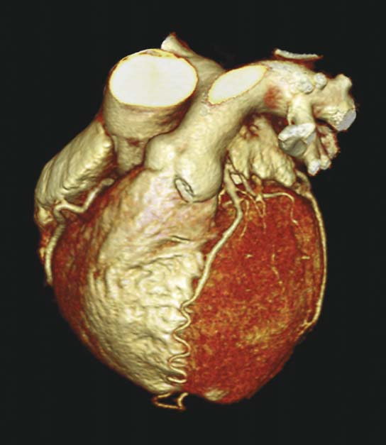
938 Capítulo 44
L
a mayoría de las células requieren un abastecimiento continuo de nutrientes y oxígeno y la eliminación de productos de desecho. En animales muy pequeños, estas necesidades metabólicas se satisfacen por simple difusión , el movimiento neto de partículas de una región de mayor concentración a una de menor concentración como resultado del movimiento aleatorio. Una molécula se puede difundir una micra ( m m) en menos de un milisegundo (ms), de modo que la difusión es adecuada en distancias microscópicas. En invertebrados que miden sólo una micra de espesor, la difusión es un mecanismo efi caz para distribuir materiales hacia y desde sus células. En consecuencia, muchos invertebrados acuáticos pequeños carecen de sistema circulatorio. El líquido entre las células, denominado fl uido intersticial , o fl uido tisular, irriga las células y constituye un medio para la difusión de oxígeno, nutrientes y desechos. El tiempo requerido por la difusión aumenta con el cuadrado de la distancia sobre la que ocurre la difusión. Una célula que se encuentra a 10 m m de su fuente de oxígeno (o nutriente) puede recibir oxígeno por difusión en aproximadamente 50 ms, pero una célula que esté a 1000 m m (1 mm) de su fuente de oxígeno podría tener que esperar varios minutos. A esta distancia, una célula no podría sobrevivir si tuviera que depender sólo de la difusión. La evolución de sistemas circulatorios especializados permitió a los animales aumentar de tamaño y adquirir el grosor de muchas células. Un sistema circulatorio reduce la distancia de difusión que deben desplazarse los materiales necesarios. Transporta oxígeno, nutrientes, hormonas y otros materiales al fl uido intersticial que circunda a todas las células y elimina desechos metabólicos. En la mayoría de los animales, un sistema circulatorio interactúa con cada sistema de órganos en el cuerpo. La tomografía computarizada (TC) mostrada en la página anterior visualiza el corazón humano y varios vasos sanguíneos. El sistema circulatorio humano, conocido como sistema cardiovascular , constituye el tema de muchas investigaciones porque los trastornos cardiovasculares son la causa más importante de fallecimiento en Estados Unidos y en todo el mundo. Un factor de riesgo fundamental para los trastornos cardiovasculares son los elevados niveles de colesterol y lipoproteínas de baja densidad (LBb) en la sangre. Por el contrario, las lipoproteínas de alta densidad (LAD) parecen desempeñar un papel protector, eliminando el exceso de colesterol de la sangre y los tejidos. Las células en el hígado y algunos otros órganos se unen con HDL, eliminan el colesterol y lo utilizan para sintetizar compuestos necesarios. Los investigadores han identifi cado un gen en ratones que codifi ca un receptor de LAD. Cuando los investigadores eliminan este gen, el colesterol aumenta a más del doble. A medida que se descubren nuevos receptores y mecanismos implicados en el transporte y metabolismo de lípidos, funcionan como objetivos para nuevos medicamentos y otros tratamientos para trastornos cardiovasculares.
44.1 TIPOS DE SISTEMAS CIRCULATORIOS
OBJETIVO DE APRENDIZAJE
1 Comparar y contrastar el transporte interno en animales sin sistema circulatorio con el de animales que tienen sistema circulatorio abierto y con el de animales que tienen sistema circulatorio cerrado.
Ningunas estructuras especializadas están presentes en esponjas, cnidarios (hidras, medusas), ctenóforos ( comb jellies ), platelmintos o nematodos (gusanos redondos). En los cnidarios, la cavidad gastrovascular central sirve como órgano circulatorio, así como órgano digestivo ( FIGURA 44-1a ). Cuando el animal se estira y contrae, los movimientos del cuerpo remueven el contenido de la cavidad gastrovascular y ayudan a distribuir nutrientes. El cuerpo plano de los platelmintos permite un intercambio efectivo de gases por difusión ( FIGURA 44-1b ). Su cavidad gastrovascular ramifi cada acerca nutrientes a todas las células. Así como en los cnidarios, la circulación es auxiliada por contracciones de los músculos de la pared del cuerpo, que mueven el fl uido por toda la cavidad gastrovascular. El sistema excretor ramifi cado de las planarias proporciona transporte interno de desechos metabólicos que después son expulsados del cuerpo. El fl uido en la cavidad corporal de los nemátodos y otros animales pseudocelomados ayuda a la circulación de materiales. Nutrientes, oxígeno y desechos se disuelven y difunden en este fl uido hacia y desde las
Cavidad gastrovascular
Faringe
Boca
En planarias, la cavidad gastrovascular ramificada permite que los nutrientes se aproximen bastante a la mayoría de las células del cuerpo.
En las especies del género Hydra y otros cnidarios, los nutrientes circulan a través de la cavidad gastrovascular y entran en contacto con la capa interior de las células del cuerpo. Los nutrientes se difunden por la corta distancia hacia la capa exterior de las células.
FIGURA 44-1 Los invertebrados no tienen sistema circulatorio La fl echas rojas indican la trayectoria de circulación de los nutrientes a través de la cavidad gastrovascular
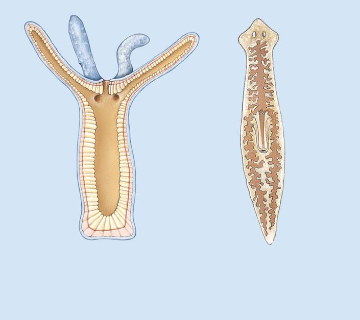
Transporte interno 939
vasos sanguíneos más pequeños, los capilares , son lo sufi cientemente delgadas para permitir la difusión de gases, nutrientes y desechos entre la sangre en los vasos y el fl uido intersticial que irriga las células. Los gusanos probóscidos (fi lum Nemertea) tienen un sistema circulatorio cerrado rudimentario. Su sistema consta de una red completa de vasos sanguíneos pero sin corazón. La circulación de la sangre depende de los movimientos del animal y de contracciones en las paredes de grandes vasos sanguíneos. Las lombrices y otros anélidos tienen un sistema circulatorio cerrado donde dos vasos sanguíneos principales se extienden a lo largo del cuerpo ( FIGURA 44-3 ). El vaso ventral conduce sangre posteriormente, y el vaso dorsal conduce sangre anteriormente. Los vasos dorsal y ventral están conectados por vasos laterales en cada segmento. Ramas de los vasos laterales suministran sangre a la superfi cie, donde es oxigenada. En la parte anterior del gusano, cinco pares de vasos sanguíneos contráctiles (algunas veces denominados “corazones”) conectan los vasos dorsal y ventral. Las con-
células. Los movimientos del cuerpo del animal mueven el fl uido y así distribuyen estos materiales. Animales más grandes requieren un sistema circulatorio para la distribución efi ciente de materiales. Normalmente, un sistema circulatorio tiene los siguientes componentes: (1) sangre , un tejido conectivo que consta de células y fragmentos de células dispersos en el fl uido, que suele llamarse plasma ; (2) un órgano de bombeo, generalmente un corazón ; y (3) un sistema de vasos sanguíneos o espacios por los que circula la sangre. Dos tipos principales de sistemas circulatorios son el abierto y el cerrado.
Muchos invertebrados tienen un sistema circulatorio abierto
Los artrópodos y la mayoría de los moluscos tienen un sistema circulatorio abierto , donde el corazón bombea sangre hacia vasos cuyos extremos son abiertos. Su sangre y el fl uido intersticial se denominan en conjunto hemolinfa . Este fl uido se derrama fuera de los extremos abiertos de los vasos sanguíneos, llenando grandes espacios denominados senos . Los senos forman el hemocele (cavidad de la sangre) que no forma parte del celoma. (En artrópodos y moluscos, el celoma es reducido). La hemolinfa irriga las células del cuerpo directamente. La hemolinfa vuelve a entrar al sistema circulatorio a través de aperturas en el corazón (en los artrópodos) o a través de vasos con extremo abierto que conducen a las branquias (en los moluscos). En el sistema circulatorio abierto de la mayoría de los moluscos, el corazón tiene tres cámaras ( FIGURA 44-2a ). Las dos aurículas reciben hemolinfa de las branquias. Luego, el único ventrículo bombea la hemolinfa rica en oxígeno hacia los vasos sanguíneos que la conducen hacia los largos senos del hemocele. Después de irrigar las células del cuerpo, la hemolinfa pasa hacia vasos que llevan a las branquias, donde es recargada de oxígeno. Luego, la hemolinfa regresa al corazón. Algunos moluscos, así como artrópodos, tienen un pigmento de hemolinfa, hemocianina , que contiene cobre que transporta el oxígeno. Cuando la hemocianina está oxigenada, es de color azul e imparte un color azulado a la hemolinfa de estos animales (¡los de sangre azul originales!) En los artrópodos, un corazón tubular bombea hemolinfa hacia las arterias, vasos sanguíneos que la entregan a los senos del hemocele ( FIGURA 44-2b ). Luego, la hemolinfa circula a través del hemocele, para volver fi nalmente a la cavidad pericardial que rodea al corazón. La hemolinfa entra al corazón a través de la ostia, aperturas diminutas equipadas con válvulas que impiden el contrafl ujo. El ritmo de circulación de hemolinfa aumenta cuando el animal se mueve. Así, cuando un animal está activo y requiere más nutrientes como combustible, su propio movimiento asegura una circulación efectiva. En langostas y otros crustáceos, cuando la hemolinfa circula por las branquias se lleva a cabo un intercambio de gases. Sin embargo, un sistema circulatorio abierto no puede suministrar sufi ciente oxígeno para mantener el activo estilo de vida de los insectos. La hemolinfa distribuye principalmente nutrientes y hormonas en los insectos. El oxígeno se difunde directamente a las células a través de un sistema de tubos de aire (tráquea) que forman el sistema respiratorio (véase la fi gura 46-2).
Algunos invertebrados tienen un sistema circulatorio cerrado
Los anélidos, algunos moluscos (cefalópodos) y los equinodermos tienen un sistema circulatorio cerrado . En estos animales, la sangre fl uye a través de un circuito continuo de vasos sanguíneos. Las paredes de los
Hemocele
Hemocele
Arteria Ostia Corazón tubular
En la mayoría de los moluscos, el corazón bombea hemolinfa hacia vasos sanguíneos que la conducen al hemocele. Después de bañar las células, la hemolinfa entra a los vasos que llevan a las branquias. La hemolinfa es recargada de oxígeno y luego es devuelta al corazón.
En los artrópodos, un corazón tubular bombea hemolinfa hacia arterias que la entregan a los senos del hemocele. Después de circular, la hemolinfa vuelve a entrar al corazón a través de la ostia en la pared del corazón.
Estómago Ventrículo
Aurícula
Branquias
FIGURA 44-2 Animada Sistemas circulatorios abiertos En los moluscos y artrópodos, un corazón bombea la sangre hacia arterias que terminan en senos del hemocele. La hemolinfa circula a través del hemocele.
940 Capítulo 44
- Ayuda a distribuir calor metabólico dentro del cuerpo, lo cual es de utilidad para mantener una temperatura corporal constante en animales endotérmicos 7. Ayuda a mantener un pH idóneo 8. Defi ende al cuerpo contra microorganismos invasores
Repaso
■ ¿Cómo son transportados los nutrientes y el oxígeno a las células del cuerpo en una Hydra , un platelminto, una lombriz, un insecto y una rana?
■ ¿Cuál es la diferencia entre un sistema circulatorio abierto y uno cerrado?
■ ¿Cuáles son las cinco funciones del sistema circulatorio de los vertebrados?
44.2 SANGRE DE LOS VERTEBRADOS
OBJETIVOS DE APRENDIZAJE
2 Comparar la estructura y función del plasma, células sanguíneas rojas, células sanguíneas blancas y plaquetas. 3 Resumir la secuencia de eventos implicados en la coagulación de la sangre.
En los vertebrados, la sangre consta de un fl uido amarillento pálido denominado plasma , donde están suspendidas células sanguíneas rojas, células sanguíneas blancas y plaquetas ( FIGURA 44-4 y TABLA 44-1 ). En los humanos el volumen total de la sangre circulante es aproximadamente 5 L en una mujer adulta y aproximadamente 5.5 L en un hombre adulto. Alrededor de 55% del volumen de sangre es plasma. El 45% restante está compuesto por células sanguíneas y plaquetas. Puesto que las células sanguíneas y las plaquetas son más pesadas que el plasma, pueden separarse de éste por centrifugación. El plasma no se separa de las células sanguíneas en el cuerpo debido a que la sangre se mezcla constantemente a medida que circula en los vasos sanguíneos.
El componente líquido de la sangre es el plasma
El plasma consta de agua (92%), proteínas (alrededor de 7%), sales y una variedad de materiales transportados, como gases disueltos, nutrientes, desechos y hormonas. El plasma está en equilibrio dinámico con el fl uido intersticial que irriga las células y con el fl uido intracelular. Cuando la sangre pasa por los capilares, las sustancias se mueven continuamente hacia dentro y hacia fuera del plasma. Cualquier diferencia con respecto a su composición original indica a uno o más órganos que restaure la homeostasis. El plasma contiene varios tipos de proteínas del plasma , cada una con propiedades y funciones específi cas: fi brinógeno ; globulinas alfa, beta y gamma; y albúmina . El fi brinógeno es una de las proteínas presentes en el proceso de coagulación. Cuando las proteínas implicadas en este proceso se eliminan del plasma, el líquido que queda se denomina suero . Las globulinas alfa incluyen ciertas hormonas y proteínas que transportan hormonas; la protrombina, una proteína que participa en la coagulación de la sangre; y lipoproteínas de alta densidad (LAD), que transportan grasas y colesterol. Las globulinas beta incluyen otras lipoproteínas que transportan grasas y colesterol, así como proteínas que transportan ciertas vitaminas y minerales. La fracción de globulina gamma del plasma contiene muchos tipos de anticuerpos que proporcionan inmunidad a enfermedades como sarampión y hepatitis infecciosa. La globulina gamma purifi cada humana se usa algunas veces para tratar ciertas enfermedades o para reducir la posibilidad de adquirir alguna enfermedad.
tracciones de estos vasos pareados y del vaso dorsal, así como la contracción de los músculos de la pared del cuerpo, hacen circular la sangre. Las lombrices tienen hemoglobina , el mismo pigmento rojo que transporta oxígeno en la sangre de los vertebrados. Sin embargo, su hemoglobina no está contenida en las células sanguíneas rojas, sino que está disuelta en el plasma sanguíneo. Aunque otros moluscos tienen un sistema circulatorio abierto, los rápidos cefalópodos, como el calamar y el pulpo, requieren un medio más efi ciente de transporte interno. Cuentan con un sistema cerrado que es aún más efectivo debido a “corazones” accesorios en la base de las branquias, que aceleran el paso de sangre a través de las branquias.
Los vertebrados tienen un sistema circulatorio cerrado
Todos los vertebrados tienen un corazón muscular, ventral, que bombea sangre hacia un sistema cerrado de vasos sanguíneos. Los capilares , los vasos sanguíneos más pequeños, tienen paredes muy delgadas que permiten el intercambio de materiales entre la sangre y el fl uido intersticial. El sistema circulatorio de los vertebrados consta de corazón, vasos sanguíneos, sangre, linfa, vasos linfáticos y órganos asociados como el timo, el bazo y el hígado. Este sistema lleva a cabo varias funciones:
- Transporta nutrientes del sistema digestivo y depósitos de almacenamiento a cada célula 2. Transporta oxígeno de estructuras respiratorias (branquias o pulmones) a las células 3. Transporta desechos metabólicos de cada célula a órganos que los excretan 4. Transporta hormonas de las glándulas endocrinas a tejidos objetivo 5. Ayuda a mantener el equilibrio de líquidos.
Vasos sanguíneos contráctiles
Vasos laterales Vaso ventral
Vaso dorsal
FIGURA 44-3 Animada Sistema circulatorio cerrado de la lombriz La sangre circula a través de un sistema continuo de vasos sanguíneos. Cinco pares de vasos sanguíneos contráctiles suministran sangre del vaso dorsal al vaso ventral.
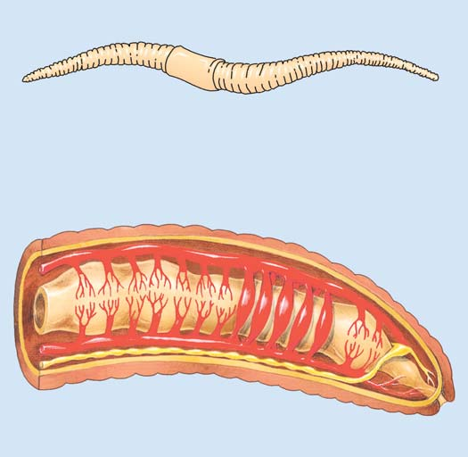
Transporte interno 941
es de aproximadamente 120 días. Cuando la sangre circula por el hígado y el bazo, células fagocitas eliminan los eritrocitos gastados de la circulación. Luego, estos eritrocitos son desarmados y algunos de sus componentes son reciclados. En el cuerpo humano, más de 2.4 millones de eritrocitos son destruidos cada segundo, de modo que un número igual debe producirse en la médula ósea para remplazarlos. La producción de eritrocitos es regulada por la hormona eritropoyetina , que liberan los riñones en respuesta a una disminución de oxígeno. La anemia es una defi ciencia en hemoglobina (a menudo acompañada por una disminución en el número de eritrocitos). Cuando la hemoglobina es insufi ciente, la cantidad de oxígeno transportado es inadecuada para satisfacer las necesidades del cuerpo. Una persona anémica puede quejarse de sentirse débil y puede cansarse fácilmente. Tres causas generales de la anemia son: (1) pérdida de sangre a causa de
Las proteínas del plasma, especialmente las albúminas y las globulinas, ayudan a regular la distribución de líquido entre el fl uido plasmático y el fl uido intersticial. Estas proteínas, que son demasiado grandes para pasar fácilmente a través de las paredes de los vasos sanguíneos, contribuyen a la presión osmótica de la sangre, lo que ayuda a mantener un volumen de sangre idóneo. Las proteínas del plasma (junto con la hemoglobina en las células sanguíneas rojas) también son buff ers ácidobase. Ayudan a mantener el pH de la sangre dentro de un rango estrecho, próximo a su pH ligeramente alcalino normal de 7.4.
Las células sanguíneas rojas transportan oxígeno
Los eritrocitos , denominados informalmente células sanguíneas rojas (CSR) , están altamente especializados para transportar oxígeno. En la mayoría de los vertebrados, excepto mamíferos, los eritrocitos circulantes tienen núcleos. Por ejemplo, las aves tienen grandes eritrocitos nucleados ovalados. En los mamíferos, el núcleo es expulsado de los eritrocitos a medida que la célula se desarrolla. Cada eritrocito de los mamíferos es un disco fl exible bicóncavo de 7 a 8 m m de diámetro y de 1 a 2 m m de espesor. Un marco elástico interno mantiene la forma del disco y permite que la célula se doble y tuerza cuando pasa a través de vasos sanguíneos inclusive más pequeños que su propio diámetro. Su forma bicóncava proporciona una gran razón de área superfi cial a volumen, lo cual permite la difusión efi ciente de oxígeno y dióxido de carbono hacia dentro y hacia fuera de la célula. En un adulto humano, en la sangre circulan alrededor de 30 mil millones de eritrocitos, aproximadamente 5 millones por m L. Los eritrocitos son producidos dentro de la médula ósea roja de ciertos huesos; vértebras, costillas, esternón, huesos del cráneo y huesos largos. Cuando un eritrocito se desarrolla, produce grandes cantidades de hemoglobina , el pigmento transportador de oxígeno que proporciona a la sangre de los vertebrados su color rojo. (El transporte de oxígeno se analiza en el capítulo 46). La vida útil de un eritrocito humano
Lipoproteínas Albúminas Globulinas Fibrinógeno
Proteínas de coagulación
Proteínas de plasma
Plasma
Células sanguíneas blancas (leucocitos)
Componentes de la célula
Leucocitos granulares
Sales de agua Gases disueltos Hormonas Glucosa Desechos Leucocitos agranulares
Monocitos de 15 a 20 μ m
Linfocitos de 8 a 10 μ m
Eosinófilos de 10 a 14 μ m
Basófilos de 10 a 14 μ m
Neutrófilos de 10 a 14 μ m
7 μ m Células sanguíneas rojas (eritrocitos)
Plaquetas de 1 a 2 μ m
Sangre entera
FIGURA 44-4 Animada Composición de la sangre de los vertebrados La sangre consta de un plasma líquido donde están suspendidas células sanguíneas blancas, células sanguíneas rojas y plaquetas.
942 Capítulo 44
empeñan un papel en reacciones alérgicas. Los basófi los no contienen lisosomas. Los gránulos en su citoplasma contienen histamina , una sustancia que dilata los vasos sanguíneos y hace más permeables los capilares. Los basófi los liberan histamina en tejidos lesionados y en respuestas alérgicas. Otros gránulos basófi los contienen heparina , que acelera la eliminación de grasa de la sangre después que se ingiere carne alta en grasa. La heparina es un anticoagulante que puede ayudar a evitar que la sangre se coagule de manera incorrecta dentro de los vasos sanguíneos. Los leucocitos agranulares carecen de grandes gránulos distintivos, y sus núcleos tienen forma redonda o de riñón. Dos tipos de leucocitos agranulares son los linfocitos y los monocitos. Algunos linfocitos están especializados en producir anticuerpos, mientras otros atacan directamente a invasores extraños como bacterias o virus (lo cual se analiza en el capítulo 45). Los monocitos son los leucocitos más grandes, llegando a medir 20 m m de diámetro. Cuando hay infecciones, los monocitos migran de la sangre hacia los tejidos. Pueden fagocitar células y eliminar moléculas tóxicas. Los monocitos también pueden diferenciarse en células macrófagos o células dendríticas. Los macrófagos son grandes células basurero que engullen vorazmente bacterias, células muertas y escombros. Las células dendríticas también son células importantes del sistema inmune. Por ejemplo, algunas células dendríticas producen compuestos que ayudan al cuerpo a combatir infecciones virales. Analizaremos los macrófagos y las células dendríticas con más detalle en el capítulo 45. La sangre humana normalmente tiene alrededor de 7000 leucocitos por m L de sangre (sólo 1 de cada 700 eritrocitos). Cuando hay infecciones bacteriales, el número puede subir abruptamente, de modo que un conteo de leucocitos es de utilidad para efectos de diagnóstico. La proporción de cada tipo de leucocitos es determinada por un conteo diferencial de leucocitos. La distribución normal de éstos se indica en la tabla 44-1. La leucemia es una forma de cáncer donde cada uno de los diversos tipos de leucocitos se multiplica rápidamente dentro de la médula
una hemorragia o sangrado interno; (2) disminución en la producción de hemoglobina o eritrocitos, como anemia por defi ciencia de hierro o anemia perniciosa (que puede ser provocada por defi ciencia de vitamina B 12 ); y (3) aumento de ritmo en la destrucción de eritrocitos; las anemias hemolíticas , como la anemia drepanocítica (vea el capítulo 16).
Las céluas sanguíneas blancas defi enden al cuerpo contra organismos patógenos
Los leucocitos , o células sanguíneas blancas (CSB) , están especializados en defender al cuerpo contra bacterias dañinas y otros microorganismos. Los leucocitos son células semejantes a amibas capaces de efectuar movimiento independiente. Algunos tipos normalmente se deslizan a través de las paredes de los vasos sanguíneos y penetran en el tejido. La sangre humana contiene tres tipos de leucocitos granulares y dos tipos de leucocitos agranulares (vea la fi gura 44-4). Ambos tipos son producidos en la médula ósea roja. Los leucocitos granulares están caracterizados por grandes núcleos lobulados y granulares en su citoplasma. Las tres variedades de leucocitos granulares son neutrófi los, eosinófi los y basófi los. Los neutrófi los , las células fagocitas más importantes en la sangre, son especialmente adeptos a buscar e ingerir bacterias. También fagocitan células muertas, una tarea de limpieza que es especialmente demandada después de una lesión o infección. La mayoría de los gránulos en los neutrófi los contienen enzimas que digieren material ingerido. Los eosinófi los tienen grandes gránulos que manchan el rojo brillante con eosina, un colorante ácido. Los eosinófi los aumentan en número durante reacciones alérgicas y durante infestaciones parasitarias (por ejemplo, tenias). Los lisosomas de estos leucocitos contienen enzimas como peroxidasas que degradan las membranas celulares de gusanos parásitos y protozoos. Estas sustancias también pueden dañar el tejido normal. Los eosinófi los también producen sustancias que promueven la infl amación. Los basófi los presentan profundos gránulos azules cuando se los tiñe con colorantes básicos. Así como los eosinófi los, estas células des-
Componentes celulares de la sangre
Rango normal Función Patología
Eritrocitos Transporte de oxígeno; transporte Muy pocos: anemia de bióxido de carbono Demasiados: policitemia
Plaquetas Esencial para la coagulación Mal funcionamiento de coagulación; sangrado, generación de moretones con facilidad
Leucocitos
Neutrófilos Fagocitosis Demasiados: puede deberse a infecciones bacteriales, inflamación, leucemia mielógena
Eosinófilos Desempeñan un papel en respuestas Demasiados: puede resultar de reacciones alérgicas; liberan proteínas que son tóxicas alérgicas, infestación de parásitos para gusanos parásitos; liberan compuestos importantes en respuestas inmunes
Basófilos Pueden tener algún papel en la prevención de coagulación inapropiada; liberan histamina, que es importante en respuestas inflamatorias
Linfocitos Producen anticuerpos; Los linfocitos atípicos presentes en monodestruyen células extrañas nucleosis infecciosas; demasiados puede deberse a leucemia linfocítica, ciertas infecciones virales Monocitos Pueden diferenciarse para formar Pueden aumentar en leucemia monocítica macrófagos o células dendríticas e infecciones fúngicas
Hombre: millones millones Mujer:
Alrededor de de leucocitos
de leucocitos
de leucocitos
de leucocitos
de leucocitos
Transporte interno 943
Las plaquetas funcionan en la coagulación de la sangre y también pueden estimular el sistema inmune. Cuando un vaso sanguíneo se corta, se constriñe para reducir la pérdida de sangre. Las plaquetas parchan físicamente la rotura al pegarse a los bordes ásperos del vaso cortado. Cuando las plaquetas comienzan a juntarse, liberan sustancias que atraen a otras plaquetas. Las plaquetas se vuelven pegajosas y se adhieren a fi bras de colágeno en la pared del vaso capilar sanguíneo. Aproximadamente 5 minutos después de producida la lesión, forman un tapón de plaquetas, o un coágulo temporal. Al mismo tiempo que se forma el coágulo temporal, empieza a desarrollarse un coágulo más fuerte y permanente. Más de 30 sustancias químicas interactúan en este complicado proceso. La serie de reacciones que conducen a la coagulación es accionada cuando uno de los factores de la coagulación en la sangre es activado por contacto con el tejido lesionado. En la hemofi lia , uno de los factores de la coagulación está ausente como resultado de alguna mutación genética heredada (véase el capítulo 16). La protrombina , una proteína del plasma elaborada en el hígado, requiere vitamina K para su producción. En presencia de factores de la coagulación, iones de calcio y compuestos liberados desde las plaquetas, la protrombina es convertida en trombina . Luego, la trombina cataliza la conversión de la proteína del plasma soluble fi brinógeno en una proteína insoluble, fi brina . Una vez formada, la fi brina se polimeriza, produciendo largos hilos que se adhieren a la superfi cie dañada del vaso sanguíneo y forman la correa del coágulo. Estos hilos atrapan células de sangre y plaquetas, lo que ayuda a reforzar el coágulo. El proceso de coagulación se resume en la FIGURA 44-5 .
ósea. Muchas de estas células no maduran, y sus grandes cantidades se agolpan desarrollando eritrocitos y plaquetas, conduciendo a anemia y alteración de la coagulación. Una causa común de muerte por leucemia es la hemorragia interna, especialmente en el cerebro. Otra causa frecuente de muerte es la infección; aunque la cantidad de leucocitos puede aumentar de manera espectacular, las células son inmaduras y anormales, de modo que no pueden defender al cuerpo contra organismos patógenos. La leucemia se trata con quimioterapia, y algunas veces con radioterapia o trasplante de médula ósea. Gracias a nuevos tratamientos, las tasas de supervivencia para personas con leucemia han aumentado notablemente durante los años recientes, particularmente en niños. Por ejemplo, la tasa de supervivencia para niños menores de cinco años con leucemia linfocítica aguda es superior a 90%.
Las plaquetas funcionan en la coagulación de la sangre
En la mayoría de los vertebrados distintos a los mamíferos, la sangre contiene pequeñas células ovaladas nucleadas denominadas trombocitos que funcionan en la coagulación de la sangre. Los mamíferos tienen plaquetas , minúsculos paquetes de citoplasma esféricos o en forma de disco sin núcleos. En la sangre humana hay alrededor de 300,000 plaquetas por m L. Las plaquetas son desprendimientos de células de gran tamaño en la médula ósea. Así, una plaqueta no es una célula completa sino un fragmento de citoplasma encerrado por una membrana.
Lesión en un vaso sanguíneo
Flujo sanguíneo
Fibrinógeno
Protrombina
Trombina
Hilos de fibrina (coágulo)
Ca 2+
Ca 2+ Activador protrombina
El flujo sanguíneo disminuye El flujo sanguíneo disminuye
Tapón de plaquetas
Se forma un coágulo más permanente
El flujo sanguíneo se detiene
Las células dañadas y las plaquetas liberan sustancias que activan los factores de la coagulación
5 μ m
Las plaquetas se adhieren a fibras de colágeno de la pared dañada del vaso
Las plaquetas y una variedad de factores de la coagulación son importantes en la coagulación de la sangre. El SEM de color mejorado de parte de un coágulo de la sangre muestra eritrocitos enredados en una red de fibrina.
Manera en que se forma un coágulo de sangre cuando un vaso sanguíneo es lesionado.
1 3 2 4
© Lennart Nilssen/Boehringer Ingelheim International, GmbH
La pared del vaso sanguíneo se contrae
FIGURA 44-5 Coagulación de la sangre
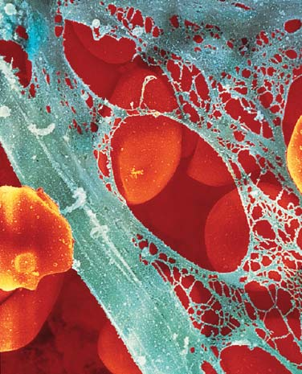
La estructura de la pared de cada tipo de vaso sanguíneo está adaptada para la función particular del vaso; por ejemplo, a través de las delgadas paredes de los capilares se intercambian materiales.
20 μ m
© Normanblue/Dreamstime
Linfático
Capa exterior (tejido conectivo) VENA
Vena
Arteria
Arteriola
Lecho capilar Ganglio linfático CAPILAR
ARTERIA
Músculo liso Endotelio
Capa exterior (tejido conectivo)
Endotelio
Movimiento de fluido intersticial
Vénula
Capilares linfáticos
Capilares
Comparación de las paredes de una arteria, vena y capilar. Todos estos vasos están revestidos con endotelio. La pared del capilar mide el grueso de una sola célula, lo que permite el intercambio de materiales.
El corazón bombea sangre hacia las arterias. Luego, la sangre fluye por las arteriolas, capilares y venas, que la regresan al corazón. Algo de plasma sale de los capilares y se vuelve fluido intersticial. Los vasos linfáticos devuelven el exceso de fluido intersticial a la sangre a través de ductos que conducen a grandes venas en la región del hombro. Los vasos sanguíneos con sangre rica en oxígeno se muestran en rojo. Los vasos sanguíneos con sangre pobre en oxígeno se muestran en azul.
Micrografía de eritrocitos pasando a través de capilares en una sola fila.
FIGURA 44-6 Animada Sangre y vasos linfáticos
PUNTO CLAVE
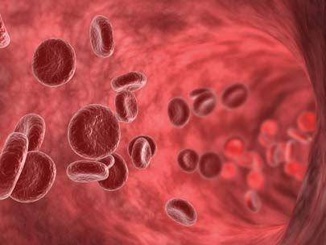
Transporte interno 945
capilares en el cuerpo son tan extensas que por lo menos uno de estos vasos diminutos está localizado cerca de cada célula en el cuerpo. La longitud total de todos los capilares en el cuerpo se ha estimado en ¡más de 96,000 km! El músculo liso en la pared de la arteriola puede constreñirse ( vasoconstricción ) o relajarse ( vasodilatación ), cambiando el radio de la arteriola. Estos cambios ayudan a mantener una presión sanguínea apropiada y ayudar a controlar el volumen de sangre que pasa a un tejido particular. Los cambios en el fl ujo sanguíneo son regulados por el sistema nervioso en respuesta a las necesidades metabólicas del tejido, así como por las demandas del cuerpo como un todo. Por ejemplo, cuando un tejido es metabolizado rápidamente, necesita más nutrientes y oxígeno. Cuando se hace ejercicio, las arteriolas dentro de los músculos esqueléticos se dilatan, aumentando en más de 10 veces la cantidad de sangre que circula hacia estos tejidos musculares. Si todos los vasos capilares sanguíneos de una persona se dilatasen al mismo tiempo, la persona no tendría sangre sufi ciente para llenarlos completamente. En condiciones normales, el hígado, los riñones y el cerebro reciben la parte del león de sangre. No obstante, si repentinamente ocurriese una emergencia que requiriese acción rápida, la sangre sería desviada rápidamente en favor del corazón y los músculos. En una ocasión así, el sistema digestivo y los riñones pueden arreglárselas con menos sangre porque no son cruciales en la respuesta a la crisis. Los pequeños capilares que unen directamente las arteriolas con las vénulas (venas pequeñas) son metarteriolas . Los verdaderos capilares se bifurcan a partir de las metarteriolas y luego vuelven a reunirse con éstas ( FIGURA 44-7 ). Los verdaderos capilares también están interconectados entre sí. Siempre que un capilar se bifurca de una metarteriola, una célula de músculo esquelético sirve como esfínter precapilar que se abre y cierra continuamente, dirigiendo la sangre primero a una y luego a otra sección del tejido. Estos esfínteres precapilares (junto con el músculo liso en las paredes de las arterias y las arteriolas) regulan el suministro de sangre a cada órgano y sus subdivisiones.
Repaso
■ ¿Cuáles son las funciones de los grupos principales de proteínas del plasma?
■ ¿Cuál es la función de los eritrocitos? ¿Y la de los neutrófi los?
■ ¿Cuáles son los pasos más importantes en la coagulación de la sangre?
44.3 VASOS SANGUÍNEOS DE LOS VERTEBRADOS
OBJETIVO DE APRENDIZAJE
4 Comparar la estructura y función de diferentes tipos de vasos sanguíneos, incluyendo arterias, arteriolas, capilares y venas.
El sistema circulatorio de los vertebrados incluye tres tipos principales de vasos sanguíneos: arterias, capilares y venas ( FIGURA 44-6 ). Una arteria transporta sangre lejos de una cámara cardiaca hacia otros tejidos. Cuando una arteria entra en un órgano, se divide en muchas ramas pequeñas denominadas arteriolas . Las arteriolas suministran sangre hacia los capilares microscópicos. Después que la sangre circula por redes de capilares dentro de un órgano o tejidos, los capilares se unen para formar venas que canalizan la sangre de vuelta al corazón. La pared de una arteria o vena consta de tres capas (vea la fi gura 44-6b). La capa más interna, que reviste el vaso sanguíneo, consta principalmente de endotelio , un tejido semejante al epitelio escamoso (vea el capítulo 39). La capa de en medio es tejido conectivo y células de músculo liso, y la capa externa es tejido conectivo rico en fi bras elásticas y colágenas. Los gases y nutrientes no pueden pasar a través de las gruesas paredes de las arterias y venas. Los materiales se intercambian entre la sangre y el fl uido intersticial que irriga las células a través de las paredes de los capilares, cuyo espesor mide lo que una sola célula gruesa. Las redes de
Arteriola Vénula
Capilares verdaderos Capilares verdaderos
Esfínter precapilar Esfínter precapilar
Metarteriola Metarteriola
Arteriola Vénula
Esfínteres abiertos. Cuando el tejido se vuelve activo, un decremento en la tensión del oxígeno en el tejido relaja los esfínteres precapilares y los capilares se abren. Este proceso incrementa el suministro de sangre y así la entrega de nutrientes y oxígeno al tejido activo.
Esfínteres cerrados. Cuando un tejido está inactivo, sólo sus metarteriolas están abiertas.
FIGURA 44-7 Flujo de sangre a través de una red de capilares Cuando el tejido se vuelve activo, el patrón de fl ujo sanguíneo a través de su red de capilares cambia.
946 Capítulo 44
tinuamente sangre a través de la circulación pulmonar. Las derivaciones entre los dos lados del corazón permiten la distribución de sangre hacia los pulmones según sea necesario. En todas las aves y los mamíferos (y en las variedades de cocodrilos), el tabique (pared) entre los ventrículos es completo. Los biólogos conjeturan que el corazón completamente dividido evolucionó dos veces durante el transcurso de la evolución de los vertebrados; primero en el clado de los cocodrilos-aves y luego independientemente en los mamíferos. El tabique entre los ventrículos evita que la sangre rica en oxígeno en la cámara izquierda se mezcle con la sangre pobre en oxígeno en la cámara derecha. El cono arterioso se dividió y se convirtió en la base de la aorta (la arteria más grande) y en la arteria pulmonar. No hay seno venoso como una cámara por separado, aunque permanece un vestigio en el nodo sinoauricular (el marcapasos). La separación completa de los lados derecho e izquierdo del corazón requiere que la sangre pase por el corazón dos veces cada que da una vuelta al cuerpo. El doble circuito completo permite que las aves y los mamíferos mantengan presiones sanguíneas relativamente altas en la circu lación sistémica y presiones modestas en la circulación pulmonar. La presión más alta es necesaria para una circulación sanguínea efi ciente a través del cuerpo. No obstante, los delicados sacos de aire y los capilares de los pulmones podrían ser dañados por esta presión. El doble circuito circulatorio suministra materiales a los tejidos de manera rápida y efi cientemente. Puesto que su sangre contiene más oxígeno por unidad de volumen y circula más rápido que en otros vertebrados, los tejidos de las aves y los mamíferos reciben más oxígeno. Como resultado, estos animales pueden mantener una tasa metabólica más alta y una temperatura corporal constante, inclusive en entornos fríos. El patrón de circulación sanguínea en aves y mamíferos puede resumirse como sigue:
venas (conducen la sangre desde los órganos) ¡ aurícula derecha
¡ ventrículo derecho ¡ arterias pulmonares ¡ capilares en los pulmones ¡ venas pulmonares ¡ aurícula
izquierda ¡ ventrículo izquierdo ¡ aorta ¡ arterias
(conducen sangre a los órganos) ¡ arteriolas ¡
capilares ¡ venas
Repaso
■ ¿Cuáles son algunas de las adaptaciones principales que ocurrieron en la evolución del sistema cardiovascular de los vertebrados?
44.5 EL CORAZÓN HUMANO
OBJETIVOS DE APRENDIZAJE
6 Describir la estructura y función del corazón humano. (Incluya el sistema de conducción cardiaca en su respuesta). 7 Seguir los eventos del ciclo cardiaco y relacionar los sonidos del corazón normal con estos eventos. 8 Defi nir gasto cardiaco , describir cómo es regulado e identifi car factores que lo afectan.
El corazón humano, no más grande que un puño y menos de medio kilogramo de peso, es un órgano extraordinario que late alrededor de 2.5 miles de millones de veces durante una vida media, bombeando aproximadamente 300 millones de litros de sangre. Para satisfacer las ne-
Repaso
■ Compare las funciones de las arterias, los capilares y las venas.
■ ¿Cómo funcionan las arteriolas para mantener la homeostasis?
44.4 EVOLUCIÓN DEL SISTEMA CARDIOVASCULAR DE LOS VERTEBRADOS
OBJETIVO DE APRENDIZAJE
5 Seguir la evolución del sistema cardiovascular de los vertebrados desde los peces hasta los mamíferos.
El sistema cardiovascular de los vertebrados se ha modifi cado en el transcurso de la evolución, como cuando el sitio de intercambio de gases se desplazó de las branquias a los pulmones y cuando ciertos vertebrados se volvieron animales activos, endotérmicos con tasas metabólicas más altas. El corazón de los vertebrados tiene una o dos aurículas , cámaras que reciben sangre que regresa de los tejidos, y uno o dos ventrículos que bombean sangre hacia las arterias ( FIGURA 44-8 ). Los vertebrados de algunos grupos tienen cámaras adicionales. El corazón de los peces tiene una aurícula y un ventrículo. La aurícula bombea sangre hacia el ventrículo, que bombea sangre hacia un único circuito de vasos sanguíneos. La sangre es oxigenada cuando pasa a través de capilares en las branquias. Después que la sangre circula a través de los capilares de las branquias, su presión es baja, de modo que la sangre pasa muy lentamente a los otros órganos. Los movimientos natatorios del pez facilitan la circulación. La sangre que regresa al corazón tiene bajo contenido de oxígeno. Un delgado seno venoso recibe sangre que regresa de los tejidos y la bombea hacia la aurícula. En los anfi bios, la sangre circula a través de un circuito doble: la circulación pulmonar y la circulación sistémica . La sangre rica en oxígeno y la sangre pobre en oxígeno se mantienen separadas de alguna manera. El corazón de los anfi bios tiene dos aurículas y un ventrículo. Un seno venoso reúne sangre pobre en oxígeno que regresa de las venas y la bombea hacia la aurícula derecha. La sangre que regresa de los pulmones pasa directamente hacia la aurícula izquierda. Ambas aurículas bombean hacia el único ventrículo, pero la sangre pobre en oxígeno es bombeada hacia fuera del ventrículo antes que entre sangre rica en oxígeno. La sangre pasa hacia una arteria, el cono arterioso , equipado con un pliegue que mantiene separada la sangre. Gran cantidad de sangre pobre en oxígeno es dirigida hacia la circulación pulmonar, que la entrega a los pulmones y la piel, donde es recargada de oxígeno. La circulación sistémica entrega sangre rica en oxígeno hacia las arterias que la conducen a los varios tejidos del cuerpo. La mayoría de los reptiles no avianos también tienen un doble circuito de fl ujo sanguíneo, hecho más efi ciente por una pared que divide parcialmente los ventrículos. (En este análisis, las aves se consideran por separado de otros reptiles). La mezcla de sangre rica en oxígeno y sangre pobre en oxígeno es minimizada por la sincronización de las contracciones de los lados izquierdo y derecho del corazón y por diferencias de presión. En los cocodrilos y lagartos, la pared entre los ventrículos es completa, de modo que el corazón consta de dos aurículas separadas y dos ventrículos separados. Así, entre los reptiles no avianos primero evolucionó un corazón de cuatro cámaras. En contraste con las aves y los mamíferos, los anfi bios y los reptiles no avianos no ventilan sus pulmones continuamente. En consecuencia, sería inefi ciente bombear con-
Transporte interno 947
ventricular . Una depresión poco profunda, la fosa oval , en el tabique interauricular indica el sitio donde una apertura, el foramen oval , estaba localizada en el corazón fetal. En el feto, el foramen oval deja que la sangre pase directamente de la aurícula derecha a la izquierda, de modo que muy poca pasa a los pulmones no funcionales. Una pequeña bolsa muscular, denominada aurícula , está en la superfi cie superior de cada aurícula. Para impedir que la sangre fl uya en sentido contrario, el corazón tiene válvulas que se cierran automáticamente ( FIGURA 44-9 ). La válvula entre la aurícula derecha y el ventrículo derecho se denomina válvula atrioventricular derecha (AV) o válvula tricúspide . La válvula AV izquierda (entre la aurícula izquierda y el ventrículo izquierdo) es la válvula mitral , o válvula bicúspide . Las válvulas AV se mantienen
cesidades cambiantes del cuerpo, el corazón puede variar su gasto desde 5 litros hasta más de 20 litros de sangre por minuto. El corazón humano es un órgano muscular hueco localizado en la cavidad torácica directamente bajo el esternón. Su pared consta principalmente de músculo cardiaco sujeto a un marco de fi bras de colágeno. El pericardio , un saco de tejido conectivo duro, encierra al corazón. Una capa lisa de endotelio cubre la superfi cie interior del pericardio y la superfi cie exterior del corazón. Entre estas dos superfi cies hay una pequeña cavidad pericardial llena de líquido, lo que reduce la fricción a un mínimo cuando late el corazón. Una pared, o septum , separa la aurícula y el ventrículo derechos de la aurícula y el ventrículo izquierdos. Entre las aurículas, la pared se denomina tabique interauricular ; entre los ventrículos, tabique inter-
El corazón con cuatro cámaras y doble circuito que separa sangre rica en oxígeno de sangre pobre en oxígeno son adaptaciones importantes que evolucionaron cuando los vertebrados se diversifi caron y algunos se volvieron animales activos, terrestres y endotérmicos.
Seno venoso
Venas desde el cuerpo
Válvula Ventrículo
Válvula
Aurícula
Aorta
- Peces. La única aurícula y el ventrículo del corazón de los peces son parte de un solo circuito de flujo sanguíneo.
Venas desde el cuerpo
Seno venoso
Válvulas
Ventrículo Cono
Aurículas
Partición que separa las aurículas
Aorta
Arteria pulmonar Vena pulmonar
- Anfibios. En los anfibios, el corazón consta de dos aurículas y un ventrículo; la sangre circula a través de un circuito doble.
Aorta Vena pulmonar
Seno venoso Venas desde el cuerpo Aurícula derecha Ventrículo
Válvulas semilunares Partición incompleta del ventrículo
Cono
Aurícula izquierda
Arteria pulmonar
Aurícula izquierda
Válvula AV
Arteria pulmonar
Aorta
Válvulas semilunares
Ventrículos
Aurícula derecha
Venas desde el cuerpo
Reptiles (excepto aves). El corazón de los reptiles tiene dos aurículas y dos ventrículos. En la mayoría de los reptiles no avianos, la pared que separa los ventrículos es incompleta, de modo que la sangre de las cámaras derecha e izquierda se mezcla en alguna medida. En los cocodrilos y lagartos, el tabique es completo y el corazón consta de cuatro cámaras separadas.
Aves y mamíferos. En aves y mamíferos, dos aurículas y dos ventrículos separan la sangre rica en oxígeno de la sangre pobre en oxígeno.
FIGURA 44-8 Evolución del sistema cardiovascular de los vertebrados
PUNTO CLAVE
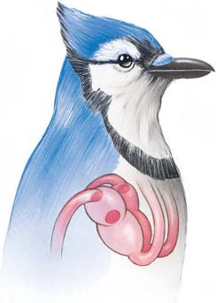
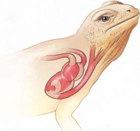
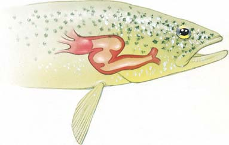
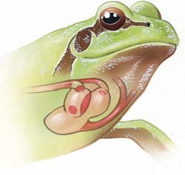
948 Capítulo 44
historias en realidad tienen conocimientos fácticos para sus fantasías exageradas porque un corazón cuidadosamente retirado del cuerpo puede seguir latiendo durante muchas horas si se le mantiene en un líquido nutritivo y oxigenado. Esto es posible porque las contracciones del músculo cardiaco empiezan en el interior del músculo en sí y pueden ocurrir independientemente de cualquier inervación ( FIGURA 44-10a ). Las células del músculo cardiaco están unidas en sus extremos por gruesas bandas denominadas discos intercalares ( FIGURAS 44-10b y c ). Estas uniones complicadas contienen uniones de brecha. Recuérdese por el capítulo 5 que en estas uniones, dos células se conectan a través de poros. Las uniones de brecha revisten gran importancia fi siológica porque ofrecen muy poca resistencia al paso de un potencial de acción. Los iones se mueven con más facilidad a través de las uniones de brecha, permitiendo que toda la masa auricular (o ventricular) se contraiga como una célula gigante. En comparación con un músculo esquelético cuyos potenciales de acción suelen durar de 1 a 2 milisegundos, los potenciales de acción del músculo cardiaco duran mucho más: varios cientos de milisegundos. Los canales de Ca 2 + activado por voltaje se abren durante la despolarización de las fi bras musculares cardiacas. La entrada de CA 2 + contribuye al mayor tiempo de despolarización. Otro factor es un canal tipo K + que permanece abierto cuando la célula está en su potencial de reposo pero se cierra durante la despolarización, alargando el tiempo de despolarización al disminuir la permeabilidad de la membrana al K + . Con base en experimentos realizados sobre fi bras musculares cardiacas aisladas, los investigadores determinaron que la contracción espontánea resulta de la combinación de una lenta disminución en la permeabilidad al K + y un lento incremento en la permeabilidad al Na + y Ca 2 + .
en su sitio por medio de cuerdas gruesas, o “fi bras del corazón”, las cuerdas tendinosas . Estas cuerdas sujetan las válvulas a los músculos papilares que se proyectan desde las paredes de los ventrículos. Cuando la sangre que regresa de los tejidos llena las aurículas, la presión sanguínea sobre las válvulas AV las obliga a abrirse hacia los ventrículos, llenándolos de sangre. Cuando los ventrículos se contraen, la sangre es obligada de nuevo contra las válvulas AV, empujándolas cerradas. La contracción de los músculos papilares y la tensión de las cuerdas tendinosas evita que las válvulas se abran de regreso hacia las aurículas. Estas válvulas son como puertas oscilatorias que se abren en una sola dirección. Las válvulas semilunares (así denominadas por sus aletas, cuya forma es como media luna) vigilan las salidas del corazón. La válvula semilunar entre el ventrículo izquierdo y la aorta es la válvula aórtica , y la que está entre el ventrículo derecho y la arteria pulmonar es la válvula pulmonar . Cuando la sangre pasa por los ventrículos, las aletas de las válvulas semilunares son empujadas a un lado y no ofrecen resistencia al fl ujo sanguíneo. Pero cuando los ventrículos están relajados y llenándose de sangre proveniente de las aurículas, la presión arterial en las arterias es más alta que la de los ventrículos. Entonces, la sangre llena las bolsas de las válvulas, estirándolas a través de la arteria, de modo que la sangre no puede circular de regreso hacia el ventrículo.
Cada latido del corazón es iniciado por un marcapasos
Las películas de horror a menudo presentan una escena donde el corazón separado del cuerpo humano sigue latiendo. Los guionistas de estas
Vena cava superior
Arterias pulmonares derechas
Válvula pulmonar
Aurícula derecha
Venas pulmonares
Válvula tricúspide
Ventrículo derecho
Vena cava inferior
Aorta
Arterias pulmonares izquierdas
Arteria pulmonar
Venas pulmonares
Aurícula izquierda
Válvula mitral
Válvula aórtica
Cuerdas tendinosas (“cuerdas del corazón”)
Músculos papilares
Ventrículo izquierdo
Aorta
Tabique interventricular
FIGURA 44-9 Animada Sección a través del corazón humano que muestra las válvulas Observe las aurículas derecha e izquierda, que reciben sangre, y los ventrículos derecho e izquierdo, que bombean sangre hacia las arterias. Las fl echas indican la dirección del fl ujo sanguíneo.
Transporte interno 949
Un sistema de conducción especializado asegura que el corazón lata a un ritmo regular y efectivo. Cada latido es iniciado por el marcapasos , una pequeña masa de fi bras del músculo cardiaco especializadas que se encuentran en el nodo sinoauricular (SA) . El nodo SA está localizado en la pared posterior de la aurícula derecha cerca de la apertura de una gran vena, la vena cava superior. El potencial de acción en el nodo SA es activado principalmente por la apertura de canales de Ca 2 + . Los extremos de las fi bras del nodo SA se unen con fi bras musculares auriculares normales, de modo que cada potencial de acción se difunde a través de las fi bras del músculo cardiaco de ambas aurículas, produciendo contracciones auriculares. Un grupo de fi bras musculares auriculares conduce el potencial de acción directamente al nodo atrioventricular (AV) , ubicado en la aurícula derecha a lo largo de la parte inferior del tabique. Aquí la transmisión es retrasada brevemente de modo que la aurícula termina de contraerse antes que los ventrículos comiencen a contraerse. A partir del nodo AV, el potencial de acción se difunde hacia fi bras musculares especializadas que forman el haz AV . Este haz se divide, enviando ramas hacia cada ventrículo. Las fi bras de las ramas del haz se dividen aún más, formando fi nalmente fi bras de Purkinje . Estas fi bras conducen los impulsos a las fi bras musculares de ambos ventrículos.
nodo SA ¡ fi bras musculares auriculares (las aurículas se
contraen) ¡ nodo AV ¡ haz AV ¡ los haces derecho e
izquierdo se ramifi can ¡ fi bras de Purkinje ¡ conduce impulsos
a fi bras musculares de ambos ventrículos ¡ los ventrículos se
contraen
Cuando cada onda de contracción se difunde a través del corazón, corrientes eléctricas circulan hacia los tejidos que rodean al corazón y sobre la superfi cie del cuerpo. Al colocar electrodos sobre la superfi cie del cuerpo en lados opuestos del corazón, un médico puede amplifi car y grabar la actividad eléctrica. La gráfi ca producida se denomina electrocardiograma ( EKG o ECG ). Anormalidades en el ECG indican trastornos en el corazón o en su ritmo. Por ejemplo, en el bloqueo cardiaco , la transmisión de impulsos es retrasada o bloqueada en algún punto del sistema de conducción. Marcapasos artifi ciales pueden ayudar a los pacientes que padecen bloqueos cardiacos severos. El marcapasos es implantado por debajo de la piel y sus electrodos se conectan al corazón. Este aparato proporciona impulsos rítmicos regulares que evitan el bloqueo y activan el corazón.
El ciclo cardiaco consta de periodos alternos de contracción y relajamiento
Cada minuto, el corazón late alrededor de 70 veces. Un latido completo del corazón se lleva a cabo en aproximadamente 0.8 s y se denomina ciclo cardiaco . La porción del ciclo en que ocurre la contracción se denomina sístole ; el período de relajamiento es la diástole . La FIGURA 44-11 muestra la secuencia de eventos que ocurren durante un ciclo cardiaco. Cuando el latido del corazón se escucha con un estetoscopio, pueden oírse dos sonidos cardiacos principales, “bum-pum” que se repiten rítmicamente. Estos sonidos resultan del cierre de las válvulas cardiacas. Cuando las válvulas se cierran, producen turbulencia en el fl ujo sanguíneo que establecen vibraciones en las paredes de las cámaras del corazón. El primer sonido del corazón, “bum”, es de bajo tono, no muy fuerte, y de bastante larga duración. Es ocasionado principalmente por el cierre de las válvulas AV (mitral y tricúspide) e indica el inicio de la sístole ventricular. El sonido “bum” es rápidamente seguido por el sonido “pum” de tono más alto, fuerte, nítido y corto. Escuchado casi como un movimiento rápido, el “pum” marca el cierre de las válvulas semilunares y el inicio de la diástole ventricular.
Nodo SA o marcapasos
Aurícula derecha
Aurícula izquierda
Nodo AV Haz AV
Ventrículo derecho
Ventrículo izquierdo
Ramas derecha e izquierda del haz AV
Fibras de Purkinje
Micrografía MET del músculo cardiaco.
Micrografía óptica del músculo cardiaco.
Línea Z
Núcleo
Discos intercalares
Mitocondria
- El nodo sinoauricular (SA) inicia cada latido. El potencial de acción se distribuye a través de las fibras musculares de las aurículas, produciendo contracción auricular. La transmisión es retrasada brevemente en el nodo sinoauricular (AV) antes que el potencial de acción se distribuya a través de fibras musculares especializadas hacia los ventrículos.
1 μ m
25 μ m
Ed Reschke Don Fawcett/Visuals Unlimited
FIGURA 44-10 Animada Sistema de conducción del corazón Cuando las células del marcapasos inician potenciales de acción en el nodo SA, las uniones de brecha dentro de los discos intercalares permiten que los impulsos se distribuyan de una fi bra muscular cardiaca a la siguiente dentro de las aurículas (y dentro de los ventrículos). Las aurículas (y luego los ventrículos) se contraen como una unidad funcional.
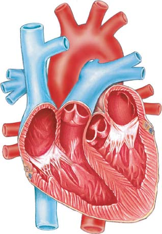
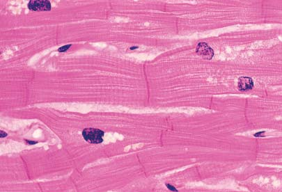
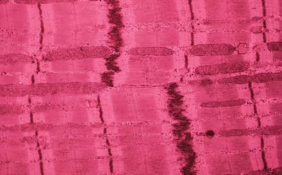
950 Capítulo 44
hacia la aorta, la pared elástica de la aorta se dilata para permitir acomodar la sangre. Esta dilatación mueve una onda por la aorta y las arterias que se bifurcan de ésta. Cuando esta onda de presión pasa, la pared arterial elástica vuelve a su tamaño normal.
El sistema nervioso regula el ritmo cardiaco
Aunque el corazón puede latir independientemente, su ritmo es, de hecho, cuidadosamente regulado por los sistemas nervioso y endocrino ( FIGURA 44-12 ). Receptores sensoriales en las paredes de ciertos vasos sanguíneos y cámaras cardiacas son sensibles a cambios en la presión sanguínea. Cuando los receptores son estimulados, envían mensajes a centros de control cardiacos en la médula del cerebro. Estos centros cardiacos
La calidad de estos sonidos dice mucho a un médico exigente sobre el estado de las válvulas. Por ejemplo, cuando una válvula no se cierra herméticamente, la sangre puede circular de regreso. Cuando las válvulas semilunares están lesionadas, en lugar del sonido normal se escucha un suave susurro sibilante (“bum-shhh”) conocido como soplo en el corazón . Algunas veces al nacer hay deformidades de las válvulas o pueden resultar de ciertas enfermedades, como fi ebre reumática o sífi lis. Las válvulas enfermas o deformadas pueden repararse quirúrgicamente o remplazarse por válvulas artifi ciales. El ritmo cardiaco puede medirse al colocar un dedo sobre la arteria radial en la muñeca o en la arteria carótida en el cuello y contar las pulsaciones durante un minuto. El pulso arterial es la dilatación y retracción alternas de una arteria. Cada que el ventrículo izquierdo bombea sangre
Los cambios rítmicos en la actividad eléctrica del corazón son responsables del ciclo cardiaco, el patrón de contracción y relajamiento que se lleva a cabo durante cada latido.
Sístole auricular. La aurícula se contrae, empujando la sangre a través de las válvulas abiertas tricúspide y mitral hacia los ventrículos. Las válvulas semilunares están cerradas.
Inicio de la sístole ventricular. Los ventrículos se contraen; la presión dentro de los ventrículos aumenta y cierra las válvulas tricúspide y mitral, ocasionando el primer sonido del corazón.
Período de aumento de la presión. Las válvulas semilunares se abren cuando la presión en los ventrículos excede la presión sanguínea. La sangre brota hacia la aorta y la arteria pulmonar.
Inicio de la diástole ventricular. La presión en los ventrículos relajados desciende por debajo de la presión sanguínea. Las válvulas semilunares se cierran a presión, produciendo el segundo sonido del corazón.
Período de descenso de presión. La sangre fluye de las venas hacia la aurícula relajada.
Ventrículo derecho Ventrículo izquierdo
Aurícula derecha
Válvula tricúspide
Vena cava inferior
Vena cava superior Aorta Arteria pulmonar
Válvulas semilunares
Vena pulmonar
Aurícula izquierda
Válvula mitral
Sonidos del corazón
1
2
3 4
5
FIGURA 44-11 Animada El ciclo cardiaco El ciclo comprende la contracción de ambas aurículas seguida de la contracción de los dos ventrículos. Las fl echas blancas indican la dirección del fl ujo sanguíneo; las líneas punteadas indican el cambio en tamaño a medida que ocurre la contracción.
PUNTO CLAVE
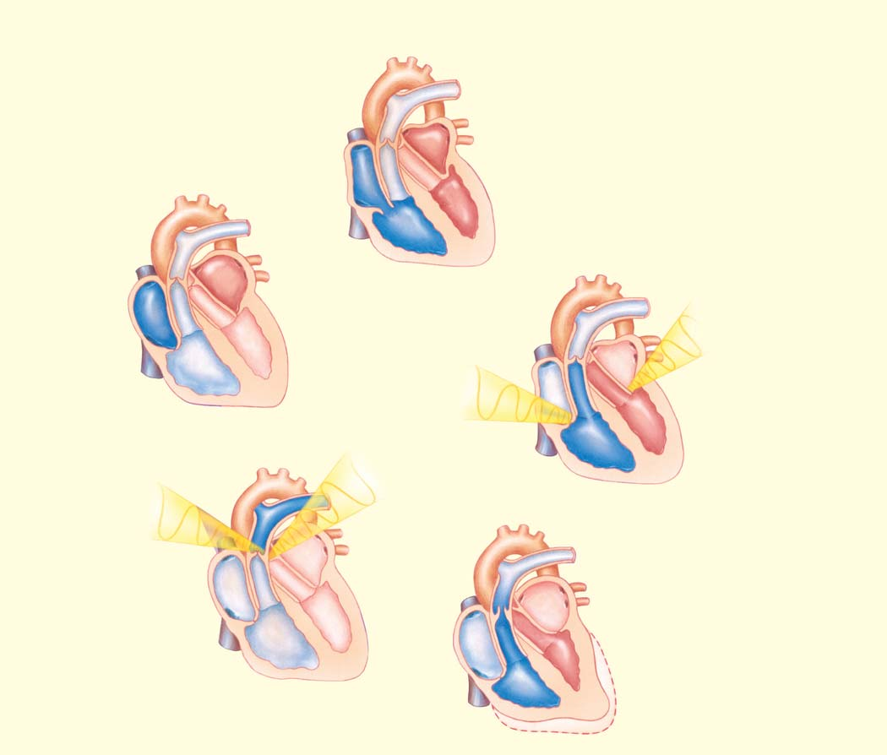
Transporte interno 951
sangre hacia las arterias (dentro de límites fi siológicos). Un incremento en el retorno venoso estira más las fi bras musculares del corazón y se contraen con más fuerza, aumentando el gasto sistólico. La norepinefrina liberada por los nervios simpáticos y la epinefrina liberada por las glándulas suprarrenales durante condiciones de estrés también aumentan la fuerza de la contracción de las fi bras musculares cardiacas.
El gasto cardiaco varía con las necesidades del cuerpo
Al multiplicar el volumen sistólico por el número de veces que el ventrículo izquierdo late por minuto es posible calcular el gasto cardiaco (GC) . El GC es el volumen de sangre bombeada por el ventrículo izquierdo hacia la aorta en un minuto. Por ejemplo, en un adulto en reposo el corazón puede latir alrededor de 72 veces por minuto y bombear aproximadamente 70 mL de sangre con cada contracción.
GC = volumen sistólico × ritmo cardiaco (número de contracciones ventriculares por minuto) = 70 mL/movimiento cardiaco × 72 movimientos cardiacos/min = 5040 mL/min (alrededor de 5 L/min)
El gasto cardiaco varía con cambios en el volumen sistólico o en el ritmo cardiaco (vea la fi gura 44-12). Cuando se incrementa el volumen sistólico, el GC aumenta. El GC varía espectacularmente con las necesidades cambiantes del cuerpo. Durante condiciones de estrés o ejercicio pesado, el corazón normal puede incrementar su GC cinco veces, de modo que bombea de 20 a 30 L de sangre por minuto.
Reposo
■ ¿Qué secuencia de eventos ocurre durante la conducción cardiaca?
■ ¿Cómo es regulado el corazón? (Incluya una descripción de los efectos de la acetilcolina y la norepinefrina).
■ ¿Qué factores afectan el gasto cardiaco?
44.6 PRESIÓN SANGUÍNEA
OBJETIVO DE APRENDIZAJE
9 Identifi car los factores que determinan y regulan la presión sanguínea, y comparar la presión arterial en diferentes tipos de vasos sanguíneos.
La presión sanguínea es la fuerza ejercida por la sangre contra las paredes interiores de los vasos sanguíneos. Es determinada por el GC, el volumen de sangre y la resistencia al fl ujo sanguíneo ( FIGURA 44-14a ). Cuando el GC aumenta, el fl ujo sanguíneo incrementado provoca que la presión sanguínea suba. Cuando el GC baja, la disminución en el fl ujo sanguíneo provoca que la presión arterial baje. Si el volumen de sangre se reduce a causa de una hemorragia o sangrado crónico, la presión sanguínea cae. Por el contrario, un incremento en el volumen de la sangre resulta en un aumento en la presión sanguínea. Por ejemplo, una elevada ingesta de sal provoca retención de agua. Esto incrementa el volumen de la sangre y eleva la presión sanguínea. El fl ujo sanguíneo es impedido por resistencia; cuando la resistencia al fl ujo aumenta, la presión sanguínea sube. La resistencia periférica es la resistencia al fl ujo de sangre provocado por la viscosidad de la sangre y por la fricción entre la sangre y la pared del vaso sanguíneo. En la sangre de una persona sana, la viscosidad permanece bastante constante y es sólo un factor menor en cambios en la presión sanguínea. De mayor importancia es la fricción entre la sangre y la pared del vaso sanguíneo.
rigen dos conjuntos de nervios autonómicos que pasan por el nodo SA; nervios parasimpáticos y simpáticos. Los nervios parasimpáticos y simpáticos tienen efectos opuestos sobre el ritmo cardiaco (vea la fi gura 42-17). Los nervios parasimpáticos liberan el neurotransmisor acetilcolina , que disminuye el ritmo cardiaco. La acetilcolina aminora la tasa de despolarización al incrementar la permeabilidad de la membrana a K + ( FIGURA 44-13a ). Los nervios simpáticos liberan norepinefrina, que acelera el ritmo cardiaco e incrementa la intensidad de la contracción. La norepinefrina estimula la apertura de los canales de CA 2+ durante la despolarización ( FIGURA 44-13b ). Tanto la norepinefrina como la acetilcolina actúan indirectamente sobre canales iónicos. Activan un proceso de transducción de señal que implica una proteína G (véase el capítulo 6). La norepinefrina se une con receptores beta-adrenérgicos , uno de los dos tipos principales de receptores adrenérgicos. Estos receptores son el objetivo de bloqueadores beta , fármacos que bloquean el efecto de la norepinefrina sobre el corazón y se usan clínicamente en el tratamiento de hipertensión (alta presión sanguínea) y otros tipos de trastornos cardiacos. En respuesta a estresores físicos y emocionales, las glándulas suprarrenales secretan epinefrina y norepinefrina, lo que acelera al corazón. Una elevada temperatura corporal también acelera el ritmo cardiaco. Cuando hay fi ebre, el corazón puede latir más de 100 veces por minuto. Como es de esperar, al ritmo cardiaco disminuye cuando desciende la temperatura del cuerpo. Ésta es la razón por la que los médicos pueden bajar deliberadamente la temperatura de un paciente durante cirugías de corazón.
El volumen sistólico depende del retorno venoso
El volumen de sangre que un ventrículo bombea durante un latido es el volumen sistólico , que depende principalmente del retorno venoso , la cantidad de sangre que las venas entregan al corazón. Según la ley de Starling , si las venas suministran más sangre al corazón, éste bombea más
Estresores y otros estímulos
Hipotálamo
Centros de control cardiacos en la médula
Nervios simpáticos (nervios aceleradores)
Nervios parasimpáticos (vagus)
Incremento en la temperatura corporal
Glándulas suprarrenales Regreso venoso aumentado
Epinefrina y norepinefrina
VOLUMEN SISTÓLICO RITMO CARDIACO GASTO CARDIACO X =
Acetilcolina
Disminuye
Aumenta
Norepinefrina
Cerebro
FIGURA 44-12 Algunos factores que afectan el gasto cardiaco
952 Capítulo 44
cambio en la presión sanguínea. La constricción de los vasos sanguíneos eleva la presión sanguínea; la dilatación la disminuye. La presión sanguínea en las arterias sube durante la sístole y baja durante la diástole. El National Institute of Health defi ne la presión san-
La longitud y el diámetro de un vaso sanguíneo determinan la cantidad de área superfi cial en contacto con la sangre. La longitud del vaso sanguíneo no cambia, pero el diámetro, especialmente el de una arteriola, sí. Un ligero cambio en el diámetro del vaso sanguíneo ocasiona un gran
Los nervios parasimpáticos liberan acetilcolina, que aminora el corazón; los nervios simpáticos liberan norepinefrina, que acelera tanto el ritmo cardiaco como la intensidad de la contracción.
La proteína quinasa activa canales de Ca 2+ de modo que se abren más fácilmente cuando la neurona está despolarizada. Los potenciales de acción ocurren más rápidamente.
La neurona simpática libera norepinefrina.
La norepinefrina se une con receptores sobre la membrana plasmática del músculo cardiaco.
El receptor activa proteína G.
La proteína G activa adenilil ciclasa, que convierte el ATP en AMP cíclico (AMPc).
El AMP cíclico activa proteína quinasa.
6
1
2
3
4
5
- Acción simpática sobre el músculo cardiaco
Proteína G
Receptor adrenérgico β
Membrana plasmática
Norepinefrina
Puerta abierta
Neurona simpática
Ca 2+
Ca 2+
Adenilil ciclasa
ATP Músculo cardiaco
6
1
2
3 4
5 AMPc
Proteína quinasa
- Acción parasimpática sobre el músculo cardiaco
La neurona parasimpática libera acetilcolina.
La acetilcolina se une con receptores sobre la membrana plasmática del músculo cardiaco.
El receptor activa proteína G.
La proteína G se une con el canal K + , abriéndolo.
El K + sale de la célula, hiperpolarizando la membrana. Los potenciales de acción ocurren más lentamente.
1
2
3
4
5
Neurona parasimpática
Acetilcolina
Músculo cardiaco
Receptor de acetilcolina Canal K +
1
2
3 4
5 K +
K +
Membrana plasmática
Proteína G
GTP
GTP
FIGURA 44-13 Acciones de neuronas simpáticas y parasimpáticas sobre las células del músculo cardiaco Neuronas simpatéticas y parasimpatéticas liberan neurotransmisores que inician el proceso de transducción de señales
PUNTO CLAVE
Transporte interno 953
músculo liso. El fl ujo sanguíneo por las venas depende de varios factores, incluyendo el movimiento del músculo esquelético, que comprime a las venas. La mayoría de las venas de más de 2 mm de diámetro que conducen sangre contra la fuerza de gravedad están equipadas con válvulas para evitar el contrafl ujo. Estas válvulas suelen constar de dos cúspides formadas por extensiones hacia dentro de la pared venosa ( FIGURA 44-15 ). Cuando una persona permanece perfectamente erguida durante algún tiempo, como cuando un soldado está en posición de fi rmes o el empleado de una tienda permanece en la caja registradora, la sangre tiende a acumularse en las venas. Cuando las venas están completamente
guínea normal como una presión sistólica de menos de 120 y una presión diastólica de menos de 80. Un ejemplo de presión sanguínea normal, medida en la parte superior del brazo con un esfi gmomanómetro, es 110/73 mm de mercurio, lo cual se abrevia mm Hg. La presión sistólica está indicada por el primer número; la diastólica, por el segundo. Si una persona tiene una presión sanguínea sistólica de 120 a 139 sobre una diastólica de 80 a 89, se considera prehipertensa , y necesita modifi car su estilo de vida para evitar enfermedad cardiovascular y ataques cardiacos. Los cambios en el estilo de vida que reducen tales riesgos incluyen hacer ejercicio, perder exceso de peso, seguir una dieta saludable para el corazón, reducir la ingesta de sal, limitar el consumo de alcohol y no fumar. Si la presión sistólica de una persona mide 140 mm Hg o más de manera consistente, o su presión diastólica es 90 mm Hg o más, la persona tiene hipertensión o alta la presión sanguínea. La hipertensión es un factor de riesgo para la aterosclerosis y otras enfermedades cardiovasculares (lo cual se analiza más tarde en el capítulo). En condiciones de hipertensión, suele haber un aumento en la resistencia vascular, especialmente en las arteriolas y arterias pequeñas. La carga de trabajo del corazón aumenta porque debe bombear contra esta mayor resistencia. Si esta condición persiste, el ventrículo izquierdo se agranda y puede deteriorar su funcionamiento. La herencia, el envejecimiento y el origen étnico contribuyen al desarrollo de la hipertensión.
La presión sanguínea varía en diferentes vasos sanguíneos
Como el lector puede imaginar, la presión sanguínea es mayor en grandes arterias, y disminuye a medida que al fl ujo sanguíneo se aleja del corazón y pasa por las arterias y capilares más pequeños ( FIGURA 44-14b ). Cuando la sangre entra a las venas, su presión es muy baja, inclusive próxima a cero. El caudal puede mantenerse en las venas a baja presión porque éstas son vasos de baja resistencia. Su diámetro es mayor que el de las arteriolas correspondientes, y sus paredes tienen poco
Presión sanguínea
Volumen de la sangre
Flujo sanguíneo
Gasto cardiaco
Viscosidad del vaso
Resistencia periférica
Vasoconstricción
Presión sistólica
Área
Velocidad
Presión diastólica
6000
5000
4000
3000
2000
1000
0
120
100
80
60
40
20
0
–10
Aorta
Arterias
Arteriolas
Capilares
Vénulas
Venas
Vena cava
Área total de la sección transversal (cm 2 ) del lecho vascular
Presión sanguínea (mm Hg)
La presión sanguínea varía en diferentes tipos de vasos sanguíneos. Se muestran las variaciones sistólica y diastólica en las presiones sanguíneas. Observe que la presión venosa desciende por abajo de cero (por abajo de la presión atmosférica) cerca del corazón.
La presión sanguínea depende del flujo sanguíneo y de la resistencia a este flujo. Una variedad de factores afectan el flujo sanguíneo y la resistencia a éste.
FIGURA 44-14 Presión sanguínea El área en la gráfi ca se refi ere al área superfi cial de los vasos sanguíneos en contacto con la sangre.
El músculo se relaja. La vena se dilata y se llena de sangre proveniente de abajo. La válvula superior impide el contraflujo.
Posición en reposo.
El músculo se contrae. Los músculos se abultan, comprimiendo las venas y obligando a la sangre hacia el corazón. La válvula inferior impide el contraflujo.
FIGURA 44-15 Flujo de sangre venosa La contracción de los músculos esqueléticos ayuda a la sangre a moverse a través de las venas.
954 Capítulo 44
44.7 EL PATRÓN DE LA CIRCULACIÓN
OBJETIVO DE APRENDIZAJE
10 Seguir una gota de sangre por las circulaciones pulmonar y sistémica, mencionando en secuencia cada una de las estructuras por las que pasa.
La mayoría de los vertebrados excepto los peces tienen un doble circuito de vasos sanguíneos: (1) la circulación pulmonar conecta el corazón y los pulmones; y (2) la circulación sistémica conecta el corazón con todos los tejidos del cuerpo. Este patrón general de circulación puede seguirse en la FIGURA 44-16 .
distendidas, dejan de aceptar más sangre de los capilares. La presión en los capilares sube, y grandes cantidades de plasma son sacadas de la circulación a través de las delgadas paredes capilares. En unos cuantos minutos, tanto como 20% del volumen de sangre puede perderse de la circulación, con efectos drásticos. La presión arterial desciende espectacularmente, reduciendo el fl ujo sanguíneo hacia el cerebro. Algunas veces la falta de oxígeno en el cerebro provoca desmayos. Esta respuesta es protectora porque permanecer acostado en la posición inclinada incrementa el suministro de sangre al cerebro. De hecho, colocar en posición vertical a una persona que se ha desmayado puede ocasionar un choque circulatorio e inclusive la muerte.
La presión sanguínea es regulada cuidadosamente
Cada vez que una persona se levanta desde una posición horizontal, su presión sanguínea cambia. Varios mecanismos interactúan para mantener la presión sanguínea normal, de modo que no se desmaye al salir de la cama cada mañana o cambie de posición durante el día. Cuando la presión sanguínea disminuye, los nervios simpáticos a los vasos sanguíneos estimulan la vasoconstricción, ocasionando que la presión vuelva a subir. Los barorreceptores , receptores especializados en las paredes de ciertas arterias y en la pared del corazón, son sensibles a cambios en la presión sanguínea. Cuando un aumento en la presión arterial estira los barorreceptores, se envían mensajes a los centros de control cardiacos y vasomotores en la médula del cerebro. El centro de control cardiaco estimula nervios parasimpáticos que aminoran el corazón, disminuyendo la presión sanguínea. El centro vasomotor inhibe nervios simpáticos que constriñen las arteriolas; esta acción produce vasodilatación, que también disminuye la presión sanguínea. Estos refl ejos neuronales trabajan continuamente de manera complementaria para mantener la presión sanguínea dentro de límites normales. Varias hormonas también están implicadas en regular la presión sanguínea (lo cual se analiza con más detalle en los capítulos 48 y 49). En respuesta a baja presión arterial, los riñones liberan renina , que activa la vía de renina-angiotensina-aldosterona . La renina actúa sobre una proteína del plasma (angiotensinógeno), activando una cascada de reacciones que producen la hormona angiotensina II , un poderoso vasoconstrictor. La vasoconstricción aumenta la presión sanguínea, restaurando la homeostasis. La angiotensina II también actúa indirectamente para mantener la presión sanguínea al incrementar la síntesis y liberación de la hormona aldosterona por las glándulas suprarrenales. La aldosterona aumenta la retención de Na + por los riñones, resultando en mayor retención de líquido y un aumento en el volumen de la sangre. Cuando el cuerpo se deshidrata, la concentración osmótica de la sangre aumenta. En respuesta, el lóbulo posterior de la glándula pituitaria libera hormona antidiurética (HAD) . La HAD aumenta la reabsorción de agua en los riñones (y sólo se produce un pequeño volumen de orina concentrada). El volumen de sangre aumenta, elevando la presión sanguínea y restaurando la homeostasis. Cuando el volumen de la sangre aumenta, las aurículas del corazón liberan una hormona denominada péptido natriurético auricular (PNA) . Esta hormona aumenta la excreción de sodio. Como resultado, se produce un gran volumen de orina diluida y la presión sanguínea disminuye . El óxido nítrico también ayuda a regular la presión sanguínea al provocar vasodilatación, disminuyendo así la presión sanguínea.
Repaso
■ ¿Qué es la resistencia periférica? ¿Cómo afecta a la presión sanguínea?
■ La presión sanguínea es baja en los capilares. ¿Cómo ayuda esto a retener líquidos en la circulación?
El lado derecho del corazón recibe sangre pobre en oxígeno y la bombea hacia la circulación pulmonar. El lado izquierdo del corazón recibe sangre rica en oxígeno de los pulmones y la bombea hacia la circulación sistémica.
Red capilar
Arteria pulmonar
Cerebro
Hacia partes bajas del cuerpo
Vena pulmonar
Pulmón izquierdo
Arteria carótida
Pulmón derecho
Vena cava inferior
Aorta
AL
Red capilar
Vena cava superior
RA
VD VI
CIRCULACIÓN SISTÉMICA
CIRCULACIÓN PULMONAR
Vena pulmonar
FIGURA 44-16 Circulación sistémica y pulmonar En este diagrama bastante simplifi cado, el rojo representa sangre rica en oxígeno y el azul representa sangre pobre en oxígeno. El recuadro con fondo azul destaca la circulación sistémica. El recuadro con fondo rojo destaca la circulación pulmonar.
PUNTO CLAVE
Transporte interno 955
La circulación sistémica suministra sangre a los tejidos
La sangre que entra en la circulación sistémica es bombeada por la aurícula izquierda hacia la aorta , la arteria más grande. Las arterias que se bifurcan de la aorta conducen sangre a todas las regiones del cuerpo. Algunas de las ramas principales incluyen las arterias coronarias a la pared del corazón en sí, las arterias carótidas al cerebro, las arterias subclavias a la región del hombro, la arteria mesentérica al intestino, las arterias renales a los riñones, y las arterias ilíacas a las piernas ( FIGURA 44-17 ). Cada una de estas arterias da origen a vasos cada vez más pequeños, semejantes a pequeñas ramas de un árbol que se dividen hasta que forman varas diminutas. Finalmente, la sangre fl uye hacia redes capilares dentro de cada tejido u órgano. La sangre que regresa de las redes capilares dentro del cerebro pasa por las venas yugulares . La sangre de los hombros y brazos circula hacia las venas subclavias . Estas venas y otras que regresan sangre de la parte superior del cuerpo se unen para formar una vena muy grande que vacía la sangre hacia la aurícula derecha. En los humanos, esta vena se denomina vena cava superior . Las venas renales de los riñones, las venas ilíacas de las extremidades inferiores, las venas hepáticas del hígado, y otras venas de la porción baja del cuerpo regresan sangre a la vena cava inferior , que la entrega a la aurícula derecha.
La circulación pulmonar oxigena la sangre
La sangre proveniente de los tejidos regresa a la aurícula derecha del corazón. Esta sangre pobre en oxígeno, cargada con bióxido de carbono, es bombeada por la aurícula derecha hacia la circulación pulmonar. A medida que emerge del corazón, el gran tronco pulmonar se bifurca para formar las arterias pulmonares que suministran sangre a los pulmones. Las arterias pulmonares son las únicas arterias en el cuerpo que transportan sangre pobre en oxígeno . En los pulmones, las arterias pulmonares se ramifi can en vasos cada vez más pequeños. Estos vasos sanguíneos originan redes extensas de capilares pulmonares que rodean los sacos de aire de los pulmones. A medida que la sangre circula por los capilares pulmonares, bióxido de carbono se difunde fuera de la sangre y hacia los sacos de aire. El oxígeno de los sacos de aire se difunde hacia la sangre, de modo que cuando entra a las venas pulmonares que conducen de vuelta a la aurícula izquierda del corazón, la sangre está cargada con oxígeno. Las venas pulmonares son las únicas venas en el cuerpo que transportan sangre rica en oxígeno . En resumen, la sangre fl uye por la circulación pulmonar en la siguiente secuencia:
aurícula derecha ¡ ventrículo derecho ¡ arterias pulmonares
¡ capilares pulmonares (en los pulmones) ¡ venas
pulmonares ¡ aurícula izquierda
Arterias carótidas
Venas yugulares
Arteria subclavia izquierda
Arco aórtico
Vena pulmonar izquierda
Arteria pulmonar izquierda
Aurícula izquierda
Ventrículo derecho
Riñón
Arteria renal
Aorta abdominal
Arteria ilíaca común
Arteria ilíaca externa
Arteria femoral
Arteria subclavia derecha
Arteria auxiliar
Pulmón derecho
Hígado
Vena renal
Vena cava inferior
Vena ilíaca común
Vena femoral
Arteria mesentérica inferior
Vena cava superior
FIGURA 44-17 Circulación de la sangre a través de algunas de las arterias y venas principales del cuerpo humano Los vasos sanguíneos que transportan sangre rica en oxígeno son rojos; los vasos sanguíneos que transportan sangre pobre en oxígeno son azules.
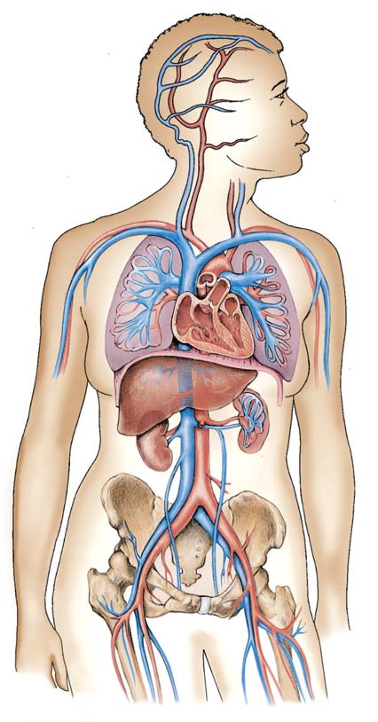
956 Capítulo 44
tejido conectivo con un gran número de linfocitos. El tejido linfático está organizado en pequeñas masas de tejido denominadas nodos linfáticos y nódulos linfáticos . Las amígdalas, la glándula del timo y el bazo, que constan principalmente de tejido linfático, también forman parte del sistema linfático. Diminutos capilares “sin salida” del sistema linfático se extienden hacia casi todos los tejidos del cuerpo ( FIGURA 44-19 ). El fl uido intersticial entra en los capilares linfáticos, donde se convierte en linfa. Los capilares linfáticos se unen para formar linfáticos más grandes (que pueden considerarse como venas linfáticas). No hay arterias linfáticas.
Como ejemplo de la circulación de la sangre a través del circuito sistémico, se seguirá una gota de sangre desde el corazón hasta la pierna derecha y de regreso al corazón:
aurícula izquierda ¡ ventrículo izquierdo ¡ aorta ¡ arteria
ilíaca común derecha ¡ arterias más pequeñas en la pierna ¡ capilares en la pierna ¡ venas pequeñas en la pierna ¡
vena ilíaca común ¡ vena cava inferior ¡ aurícula derecha
En la mayoría de los peces, anfi bios y reptiles no avianos, el músculo cardiaco es esponjoso y recibe oxígeno directamente de la sangre cuando ésta pasa por las cámaras cardiacas. No obstante, en aves y mamíferos las paredes del corazón son demasiado gruesas para que los nutrientes y el oxígeno lleguen a todas las fi bras musculares por difusión. En lugar de eso, el músculo cardiaco cuenta con su propio sistema de vasos sanguíneos. En los humanos, las arterias coronarias originan una red de capilares dentro de la pared del corazón. Las venas coronarias se unen para formar una gran vena, el seno coronario , que se vacía directamente en la aurícula derecha. La sangre casi siempre se desplaza de las arterias a los capilares, a las venas y al corazón. Una excepción ocurre en el sistema portal hepático . En lugar de conducir directamente de vuelta al corazón (como la mayoría de las venas), la vena portal hepática suministra nutrientes del intestino al hígado. Dentro del hígado, la vena portal hepática origina una extensa red de diminutos senos sanguíneos. A medida que la sangre circula por los senos hepáticos, las células del hígado eliminan nutrientes y los almacenan. Finalmente, los senos del hígado se unen para formar venas hepáticas, que suministran sangre a la vena cava inferior.
Repaso
■ ¿Qué secuencia de vasos sanguíneos y cámaras cardiacas pasa un eritrocito en su camino (1) de la vena cava inferior a la aorta y (2) de la vena renal a la arteria renal?
■ ¿Cuál es la función del sistema portal hepático? ¿Cómo difiere su secuencia de vasos sanguíneos con respecto a la mayoría de las demás rutas circulatorias?
44.8 EL SISTEMA LINFÁTICO
OBJETIVO DE APRENDIZAJE
11 Describir la estructura y las funciones del sistema linfático.
Además del sistema circulatorio sanguíneo, los vertebrados tienen un sis tema circulatorio accesorio, el sistema linfático ( FIGURA 44-18 ). El sistema linfático (1) reúne y devuelve fl uido intersticial a la sangre, (2) lan za respuestas inmunes que defi enden al cuerpo contra organismos patógenos, y (3) absorbe lípidos del tracto digestivo. En esta sección nos enfocamos en la primera función. La inmunidad se aborda en el capítulo 45 y la absorción de lípidos, en el capítulo 47.
El sistema linfático consta de vasos linfáticos y tejido linfático
El sistema linfático consta de (1) una extensa red de vasos linfáticos , o simplemente linfáticos , que conducen linfa , el fl uido acuoso claro formado a partir del fl uido intersticial y (2) tejido linfático , un tipo de
Linfáticos de los senos
Linfáticos superficiales de la extremidad superior
Linfáticos superficiales de la extremidad inferior
Ducto linfático derecho
Vena subclavia izquierda
Ducto torácico
Bazo
Ganglios linfáticos cervicales Vena subclavia derecha
Timo Nodos linfáticos auxiliares
Amígdala
FIGURA 44-18 Animada Sistema linfático humano Observe que los vasos linfáticos se extienden hacia la mayoría de los tejidos del cuerpo, pero los nodos linfáticos están agrupados en ciertas regiones. El ducto linfático derecho drena linfa del cuadrante superior derecho del cuerpo. El ducto torácico drena linfa de otras regiones del cuerpo. Ambos ductos regresan fl uido a la sangre.
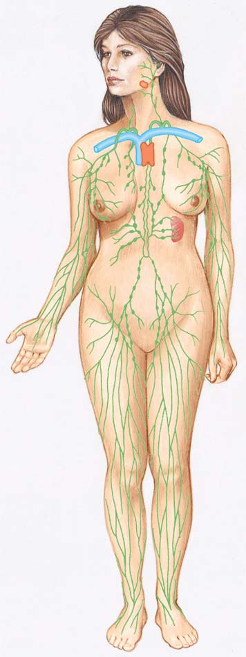
Transporte interno 957
eritrocitos ni plaquetas y sólo unos cuantos leucocitos. Su contenido proteínico es alrededor de una cuarta parte del que se encuentra en el plasma porque las proteínas son demasiado grandes para pasar fácilmente a través de las paredes de los capilares. No obstante, moléculas más pequeñas disueltas en el plasma salen con el fl uido que abandona los vasos sanguíneos. Así, el fl uido intersticial contiene glucosa, aminoácidos, otros nutrientes y oxígeno, así como una variedad de sales. Este nutritivo fl uido irriga todas las células. Tres factores son responsables de la presión neta de fi ltración , que es la tendencia del plasma a dejar la sangre en el extremo arterial de un capilar y entrar al fl uido intersticial ( FIGURA 44-20 ). La fuerza principal es la fuerza hidrostática , la presión arterial contra la pared capilar. Este efecto es aumentado por la presión osmótica del fl uido intersticial. La principal fuerza opositora es la presión osmótica de la sangre, que es mayor que la presión osmótica del fl uido intersticial y restringe la pérdida de fl uido del capilar. En los extremos venosos de los capilares, la presión hidrostática de la sangre es mucho menor, y la presión osmótica de la sangre extrae el fl uido de vuelta al capilar. Sin embargo, no tanto fl uido es absorbido de regreso hacia la circulación en los extremos venosos de los capilares como el que es fi ltrado hacia fuera en los extremos arteriales. Además, la proteína no regresa efectivamente hacia los capilares venosos, y en lugar de ello tiende a acumularse en el fl uido intersticial. Estos problemas potenciales son tan serios que sin el sistema linfático, el equilibrio de líquidos en el cuerpo estaría gravemente perturbado en cuestión de algunas horas, y en menos de 24 horas ocurriría la muerte. El sistema linfático preserva el equilibrio de líquidos al reunir el fl uido intersticial, incluyendo la proteína que se acumula en éste, y devolviéndolo a la circulación. Las paredes de los capilares linfáticos constan de células endoteliales que se superponen ligeramente. Cuando el fl uido intersticial se acumula, ejerce presión sobre estas células, empujándolas hacia dentro como diminutas puertas giratorias que sólo giran en una dirección. Cuando el fl uido se acumula dentro del capilar linfático, estas puertas son empujadas cerradas. La obstrucción de los vasos linfáticos produce linfedema , infl amación por la acumulación excesiva de fl uido intersticial. Los vasos linfáticos pueden bloquearse como resultado de daño, infl amación, cirugía o infección por parásitos. Por ejemplo, cuando se extirpa un seno (mastectomía) debido a cáncer, los nodos linfáticos en la axila a menudo son extirpados para prevenir la dispersión de células cancerosas. La circulación interrumpida de la linfa puede ocasionar que el brazo del paciente se infl ame. El tratamiento se enfoca en minimizar la hinchazón y controlar la incomodidad y el dolor.
Repaso
■ ¿Cuáles son las relaciones entre plasma, fl uido intersticial y linfa?
■ ¿Cómo ayuda el sistema linfático a mantener el equilibro de líquidos?
44.9 ENFERMEDAD CARDIOVASCULAR
OBJETIVO DE APRENDIZAJE
12 Seguir la progresión de la aterosclerosis y describir por lo menos cinco factores de riesgo para la enfermedad cardiovascular.
La enfermedad cardiovascular es la causa más importante de muerte en el mundo, contabilizando alrededor de 30% de los fallecimientos cada año. En Estados Unidos, la enfermedad cardiovascular es responsable de aproximadamente 40% de todas las muertes, más que las muertes
La linfa pasa de los capilares linfáticos hacia los linfáticos, que en ciertos sitios se vacían hacia los nodos linfáticos. Cuando la linfa circu la por los nodos linfáticos, fagocitos fi ltran bacterias y otros materiales dañinos. Luego, la linfa circula hacia los linfáticos, que la conducen lejos del nodo de linfa. Los linfáticos de todo el cuerpo conducen linfa hacia la región del hombro. Estos vasos se unen al sistema circulatorio en la base de las venas subclavias por medio de conductos: el ducto torácico sobre el lado izquierdo y el ducto linfático derecho en el derecho. Las amígdalas son masas de tejido linfático bajo el revestimiento de la cavidad oral y la garganta. (Cuando las amígdalas faríngeas en la parte posterior de la nariz se agrandan, se denominan adenoides ). Las amígdalas ayudan a proteger al sistema respiratorio de infecciones al destruir bacterias y otra materia extraña que entra al cuerpo por la boca o la nariz. Desafortunadamente, algunas veces las amígdalas son superadas por bacterias invasoras y ellas mismas se vuelven un sitio de infecciones frecuentes. Algunos vertebrados, como las ranas, tienen “corazones” linfáticos que pulsan y comprimen la linfa. No obstante, en mamíferos las paredes mismas de los vasos linfáticos pulsan. Las válvulas dentro de los linfáticos evitan que la linfa fl uya en dirección opuesta. Cuando los músculos se contraen o cuando las arterias pulsan, la presión sobre los vasos linfáticos incrementa el fl ujo de linfa. El ritmo al que circula la linfa es lento y variable. El fl ujo total de linfa es alrededor de 100 mL por hora, mucho más lento que el fl ujo sanguíneo de 5 mL por minuto que circula en el sistema cardiovascular.
El sistema linfático desempeña un papel importante en la homeostasis de los líquidos
Cuando la sangre entra en una red capilar, está bajo una presión más bien alta, de modo que parte del plasma es obligado a salir de los capilares hacia los tejidos. Una vez que este fl uido abandona los vasos sanguíneos, se denomina fl uido intersticial , o fl uido de los tejidos. No contiene
Arteriola
Válvula
Vénula Eritrocitos
Plasma
Lecho capilar
Fibras de tejido conectivo
Linfa
Plasma
FIGURA 44-19 Animada Capilares linfáticos Los capilares linfáticos drenan el exceso de fl uido intersticial de los tejidos. Observe que los capilares sanguíneos están conectados con vasos en ambos extremos, mientras los capilares linfáticos ( en verde ) son “callejones sin salida”. Las fl echas indican la dirección del fl ujo.
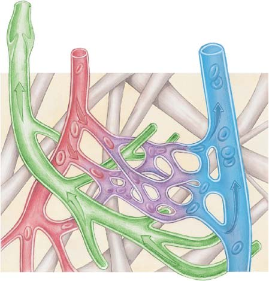
958 Capítulo 44
tidades de células espumosas conducen al desarrollo de estrías grasas, consideradas como la lesión inicial en el avance de la aterosclerosis. Algo interesante es que en las arterias de algunos niños y adolescentes han sido identifi cadas estrías grasas. Fibras de músculo liso subyacentes migran al revestimiento interior de la arteria, donde se multiplican. Fibras de tejido conectivo también proliferan y producen colágeno. Los leucocitos, incluyendo monocitos y células T (un tipo de linfocito importante en las respuestas inmunes), se desplazan hacia la región. Estas células producen sustancias que mantienen una infl amación crónica en la capa interior de la pared arterial. La infl amación, analizada en el capítulo 45, es una de las respuestas más importantes del cuerpo a infecciones o lesiones. La acumulación de sustancias grasas, fi bras de músculo liso, macrófagos y otras células, colágeno, y algunas veces, calcio, forma la placa aterosclerótica . Cuando la placa aumenta de tamaño, tiene lugar la remodelación de la arteria, de modo que durante algún tiempo se mantiene el tamaño del lumen (apertura) del vaso sanguíneo. Fibras de múscu lo liso forman una capa fi brosa de protección, que blinda a la placa del revestimiento interno de la arteria y de la sangre. Macrófagos y otras células fi nalmente mueren dentro de la placa, reclutando más macrófagos al área para limpiar los escombros. La progresión de la aterosclerosis puede continuar durante décadas sin presentar síntomas. No obstante, a medida que la placa ate-
ocasionadas por todos los tipos de cáncer combinados. De acuerdo con los Centers for Disease Control and Prevention, la enfermedad cardiovascular cuesta a Estados Unidos tres mil millones de dólares anuales (con base en cifras para 2010). Este costo incluye servicios de salud, medicamentos y pérdida de productividad. La muerte ocurre a menudo debido a alguna complicación de aterosclerosis , trombosis (coágulos) o hipertensión (alta presión arterial). Normalmente estas tres condiciones se presentan juntas. La aterosclerosis es una enfermedad progresiva donde las paredes de ciertas arterias están dañadas, infl amadas y son más estrechas como resultado de depósitos de lípidos en sus paredes. Aunque la enfermedad puede afectar casi cualquier arteria, suele desarrollarse más a menudo en la aorta, y en las arterias coronarias y cerebrales. Los primeros eventos en la aterosclerosis empiezan cuando el exceso de lipoproteína de baja densidad (LDL), conocida como colesterol “malo”, en la sangre entra a la capa interior de vasos sanguíneos. (Las LDL se analizarán con más detalle en el capítulo 47; la absorción de LDL por las células se describió en el capítulo 5). Recuerde que la capa interior de un vaso sanguíneo está compuesta por células endoteliales. El exceso de LBD en la pared del vaso sanguíneo es oxidado por radicales libres y se acumula entre y por debajo de las células endoteliales. Macrófagos fagocitan este exceso de LBD, llenándose de ésta. Estos macrófagos se denominan células espumosas . Grandes can-
Más fl uido sale en el extremo arterial de cada capilar del que es devuelto al extremo venoso. El sistema linfático reúne el exceso de fl uido intersticial y lo regresa a la sangre.
(40 + 3) − 28 = +15 (15 + 3) − 28 = − 10
Presión osmótica del plasma ( − 28)
Presión osmótica del fluido intersticial (+3)
Presión hidrostática (+15)
Presión hidrostática (+40)
Presión osmótica del plasma ( − 28)
Presión osmótica del fluido intersticial (+3)
Extremo arterial del capilar
Extremo venoso del capilar
Filtración neta (presión para extraer fluido hacia fuera del capilar)
Absorción neta (presión para extraer fluido hacia el capilar)
1 En el extremo arterial de un capilar, la presión arterial obliga a salir al plasma del capilar. La presión osmótica de la sangre es una fuerza opositora que actúa para extraer fluido hacia la sangre.
2 La presión osmótica del fluido intersticial contribuye a la presión neta de filtración pero no cambia mucho entre los extremos arterial y venoso del capilar.
3 En el extremo venoso de un capilar, el fluido entra a la sangre porque la presión sanguínea es mucho menor.
FIGURA 44-20 Movimiento de líquido entre la sangre y el fl uido intersticial El intercambio de materiales disueltos entre la sangre y el fl uido intersticial depende del movimiento del fl uido entre la sangre y el fl uido intersticial que rodea al capilar. Este movimiento del fl uido depende de
la presión hidrostática de la sangre y de presiones osmóticas. Las cifras proporcionadas son hipotéticas y representan milímetros de mercurio.
PUNTO CLAVE
Transporte interno 959
de vida que pueden reducir factores de riesgo. Entre los tipos de medicamentos están las estatinas, medicamentos que reducen el nivel de colesterol; aspirina, que reduce la tendencia a la coagulación de la sangre e inhibidores de enzima convertidora de angiotensina (ECA), fármacos que disminuyen la presión arterial. Al inhibir la ECA, una enzima clave responsable de la síntesis de angiotensina II, estos medicamentos disminuyen la presión arterial. (La angiotensina II es un poderoso vasoconstrictor y también promueve la producción de la hormona aldosterona, que incrementa la reabsorción de sodio en los riñones y así, la retención de agua. La angiotensina II y la aldosterona se analizan con más detalle en el capítulo 48). Algunos métodos quirúrgicos incluyen angiopla stia y la implantación de endoprótesis y cirugía de derivación coronaria. La angioplastia implica la inserción de un pequeño globo en una arteria coronaria ocluida. Al infl ar el globo se rompe la placa en la pared arterial ampliando así el vaso. Una endoprótesis (tubo de malla) implantado en la arteria ayuda a mantener abierta la arteria. En la cirugía de derivación coronaria , venas de otra ubicación en el cuerpo del paciente son injertadas alrededor de las arterias coronarias ocluidas. Los vasos sanguíneos en su nueva posición permiten que la sangre circule alrededor de las arterias bloqueadas, restaurando un fl ujo sanguíneo idóneo hacia el área afectada. Algunos tratamientos futuros para corazones dañados pueden incluir terapias con células madre. Los investigadores han demostrado que las células madre cardiacas pueden diferenciarse en células del músculo cardiaco y otros tipos de células del corazón. Se han identifi cado algunos factores de riesgo principales modifi cables de enfermedad cardiovascular:
- Elevados niveles de lipoproteínas de baja densidad-colesterol en la sangre . Estos niveles están asociados con dietas ricas en calorías totales, grasas totales, grasas saturadas y colesterol. 2. Hipertensión . Mientras más alta sea la presión arterial, mayor es el riesgo. La hormona angiotensina II, de la cual se considera que a niveles anormalmente altos contribuye a la hipertensión, también estimula la infl amación. 3. Fumar . El riesgo de desarrollar aterosclerosis es de tres a seis veces mayor en fumadores que en no fumadores y es directamente proporcional al número de cigarrillos fumados al día. La nicotina constriñe los vasos sanguíneos, y el monóxido de carbono en el humo
rosclerótica se acumula, las arterias terminan por perder su habilidad para estirarse cuando están llenas de sangre. Cuando las paredes engrosan, el diámetro de la arteria disminuye y gradualmente es ocluida (bloqueada) como se muestra en la FIGURA 44-21 . Los vasos ocluidos entregan menos sangre a los tejidos, que entonces se vuelven isquémicos , o faltos de sangre. Ahora el tejido está privado de una fuente de abastecimiento idónea de oxígeno y nutrientes. En la enfermedad isquémica del corazón , la incrementada necesidad de oxígeno cuando se hace ejercicio o en condiciones de estrés emocional resulta en el dolor característico de la angina de pecho . La nitroglicerina, en forma de píldoras o como parche, dilata las venas, reduciendo el retorno venoso. El gasto cardiaco es disminuido de modo que el corazón no trabaja tanto y requiere menos oxígeno. La nitroglicerina también dilata ligeramente las arterias coronarias, permitiendo que más sangre llegue al músculo cardiaco. Los bloqueadores de canales iónicos de calcio son medicamentos que aminoran el ritmo del corazón al inhibir el paso de Ca 2 + hacia fi bras del músculo cardiaco. También dilatan las arterias coronarias. El infarto al miocardio (IM), o ataque cardiaco, es una consecuencia muy seria, a veces fatal, de la enfermedad cardiovascular. El IM es el primer síntoma de la enfermedad cardiovascular aterosclerótica para alrededor de 65% de hombres y casi 50% de mujeres. El IM es la causa principal de muerte y discapacidad en Estados Unidos. El IM a menudo resulta por una disminución repentina en el suministro de sangre coronaria. Si sólo una pequeña región del músculo cardiaco es afectada, el corazón puede continuar funcionando. Las células en la región privadas de oxígeno mueren y son remplazadas por tejido de la cicatriz. La disminución repentina en abastecimiento de sangre asociada con el IM a menudo ocurre cuando la infl amación ocasiona que la capa fi brosa sobre la placa aterosclerótica se rompa. Las plaquetas se adhieren a la rugosa pared arterial e inician la coagulación. Un trombo es un coágulo que se forma dentro de un vaso sanguíneo o dentro del corazón; un trombo que se forma dentro de una arteria coronaria puede bloquear una rama importante de la arteria. El fl ujo sanguíneo hacia una porción del músculo cardiaco puede ser impedido o detenido por completo. Cuando una región del músculo cardiaco es privada del suministro de sangre, el corazón puede dejar de latir. Esta condición, denominada paro cardiaco , puede ocasionar la muerte en pocos minutos. Un episodio de isquemia puede activar una arritmia fatal como la fi brilación ventricular , una condición donde los ventrículos se contraen muy rápido sin bombear sangre realmente. El pulso puede detenerse y la presión arterial puede descender abruptamente. La fi brilación ventricular ha sido relacionada con alrededor de 65% de paros cardiacos. El único tratamiento efectivo para la fi brilación es la desfi brilación con choques eléctricos. Parece que el choque despolariza todas las fi bras musculares en el corazón de modo que su mecanismo de sincronización puede restablecerse. Cuando la aterosclerosis se desarrolla en las arterias cerebrales, menos sangre llega al cerebro. Esta condición puede conducir a un accidente cerebrovascular (ACV) , conocido comúnmente como derrame cerebral . La mayoría de los ACV son ocasionados por isquemia, en general como resultado de una trombosis. El tratamiento actual para pacientes con enfermedades cardiovasculares progresivas incluye el uso de ciertos medicamentos; procedimientos quirúrgicos dirigidos a la restauración y mejoramiento del fl ujo sanguíneo; y más importante, una educación que tome en cuenta cambios en el estilo
500 μ m 500 μ m
Esta arteria está gravemente ocluida por la placa ateroesclerótica que se ha acumulado dentro de su pared.
Arteria coronaria normal.
Science Photo Library
© PHOTOTAKE Inc./Alamy
FIGURA 44-21 Progresión de la aterosclerosis Micrografía de secciones transversales a través de dos arterias que muestran cambios que ocurren en la aterosclerosis.
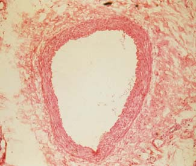
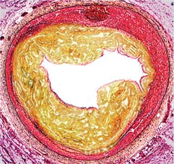
960 Capítulo 44
ción de lipoproteínas de alta densidad (LAD), que protegen contra enfermedades del corazón. 6. Sobrepeso y obesidad . Tener sobrepeso puede afectar los niveles de colesterol y aumenta el riesgo de hipertensión y diabetes.
El riesgo de desarrollar enfermedades cardiovasculares también aumenta con la edad. Otros factores de riesgo probables que están en estudio actualmente son predisposición hereditaria, niveles hormonales, estrés y patrones de comportamiento, así como factores dietéticos.
Repaso
■ ¿Qué ocurre cuando lipoproteínas de baja densidad en exceso entran en la capa interior de las arterias?
■ ¿Qué es la fi brilación ventricular?
■ ¿De qué manera fumar cigarrillos contribuye a la aterosclerosis?
daña el revestimiento interior de los vasos sanguíneos. Componentes del humo del cigarrillo producen la formación de oxidantes, que pueden contribuir a la infl amación al incrementar la oxidación de lipoproteínas de baja densidad en la pared arterial. 4. Diabetes mellitus . En este trastorno endocrino, la glucosa no es metabolizada normalmente. El cuerpo cambia a metabolismo de la grasa y hay un incremento notable en la circulación de lípidos, lo cual conduce a aterosclerosis. La intolerancia a la glucosa es también un factor de riesgo. 5. Inactividad física . La inactividad física contribuye en más la tercera parte a los alrededor de 500 000 fallecimientos relacionados con enfermedades del corazón en Estados Unidos cada año. El ejercicio reduce la concentración de triacilgliceroles (triglicéridos) y colesterol en la sangre. (Estos lípidos han sido asociados con enfermedades del corazón). Al mismo tiempo, el ejercicio aumenta la concentra-
44.1 (página 938)
1 Comparar y contrastar el transporte interno en animales sin sistema circulatorio con el de animales que tienen sistema circulatorio abierto y con el de animales que tienen sistema circulatorio cerrado.
■ Pequeños invertebrados simples, como esponjas, cnidarios y lombrices, dependen de la difusión para transporte interno. Animales más grandes requieren un sistema circulatorio especializado, que suele constar de sangre , un corazón y un sistema de vasos sanguíneos o espacios por los cuales circula la sangre. En todos los animales, el fl uido intersticial , el líquido en los tejidos, hace entrar en contacto oxígeno y nutrientes con las células.
■ Los artrópodos y la mayoría de los moluscos tienen un sistema circulatorio abierto en el que la sangre fl uye hacia un hemocel , irrigando directamente los tejidos.
■ Algunos invertebrados y todos los vertebrados tienen un sistema circulatorio cerrado en el que la sangre circula por un circuito continuo de vasos sanguíneos.
■ El sistema circulatorio de los vertebrados consta de un corazón muscular que bombea sangre hacia un sistema de vasos sanguíneos. El sistema circulatorio transporta nutrientes, oxígeno, desechos y hormonas, ayuda a mantener el equilibrio de líquidos, un pH idóneo, y la temperatura corporal; también defi ende al cuerpo contra enfermedades.
Aprenda más sobre los sistemas circulatorios abierto y cerrado haciendo clic en las fi guras en CengageNOW .
44.2 (página 940)
2 Comparar la estructura y función del plasma, eritrocitos, leucocitos y plaquetas.
■ El plasma consta de agua, sales, sustancias en transporte, y proteínas del plasma , incluyendo albúminas, globulinas y fi brinógeno.
■ Las células sanguíneas rojas , también denominadas eritrocitos , transportan oxígeno y bióxido de carbono. Los eritrocitos producen grandes cantidades de hemoglobina , un pigmento rojo que transporta oxígeno.
■ Las células sanguíneas blancas , también denominadas leucocitos , defi enden al cuerpo contra organismos patógenos. Los linfocitos y los monocitos son leucocitos agranulares; los neutrófi los , los eosinófi los y los basófi los son leucocitos granulares. Los monocitos pueden desarrollarse en células macrófagas y células dendríticas .
■ Las plaquetas parchan vasos sanguíneos lesionados y liberan sustancias esenciales para la coagulación de la sangre.
Aprenda más sobre la composición de la sangre de los vertebrados haciendo clic en las fi guras en CengageNOW .
3 Resumir la secuencia de eventos implicados en la coagulación de la sangre.
■ Las células lesionadas y las plaquetas liberan sustancias que activan factores para la coagulación de la sangre. La protrombina se convierte en trombina , que cataliza la conversión de fi brinógeno en una proteína insoluble, fi brina . La fi brina forma hilos largos que constituyen la correa del coágulo.
44.3 (página 945)
4 Comparar la estructura y función de diferentes tipos de vasos sanguíneos, incluyendo arterias, arteriolas, capilares y venas.
■ Las arterias transportan sangre lejos del corazón. Las arteriolas son arterias pequeñas que regulan la presión arterial por constricción ( vasoconstricción ) y dilatación ( vasodilatación ). Los capilares son los vasos de intercambio de pared delgada a través de los cuales la sangre y los tejidos transfi eren materiales. Las venas regresan la sangre hacia el corazón.
■ ■ RESUMEN: ENFOQUE EN LOS OBJETIVOS DE APRENDIZAJE
Linfático Vena
Arteria
Nodo de linfa
Capilares linfáticos
Capilares
Transporte interno 961
■ La presión sanguínea depende del gasto cardiaco, el volumen de la sangre y la resistencia al fl ujo sanguíneo. La resistencia periférica es la resistencia al fl ujo sanguíneo ocasionada por la viscosidad de la sangre y por la fricción entre la sangre y la pared del vaso sanguíneo.
■ Barorreceptores sensibles a cambios en la presión sanguínea envían mensajes a los centros cardiacos y vasomotores en la médula del cerebro. Una vez que el centro de control cardiaco está informado de un aumento en la presión sanguínea, estimula nervios parasimpáticos que aminoran al ritmo cardiaco. El centro vasomotor inhibe nervios simpáticos que constriñen a los vasos sanguíneos. Estas acciones reducen la presión sanguínea.
■ La angiotensina II es una hormona que eleva la presión sanguínea. La aldosterona ayuda a regular la excreción de sal, que afecta el volumen de la sangre y la presión sanguínea.
Aprenda más sobre cómo determinar la presión sanguínea haciendo clic en la fi gura en CengageNOW .
44.7 (página 954)
10 Seguir una gota de sangre por las circulaciones pulmonar y sistémica, mencionando en secuencia cada una de las estructuras por las que pasa.
■ La circulación pulmonar conecta el corazón con los pulmones, la circulación sistémica conecta el corazón con los tejidos. En la circulación pulmonar, el ventrículo derecho bombea sangre hacia las arterias pulmonares , que van a los pulmones. La sangre circula por capilares pulmonares en el pulmón y luego es conducida a la aurícula izquierda por una vena pulmonar .
■ En la circulación sistémica, el ventrículo izquierdo bombea sangre hacia la aorta , que se bifurca en arterias que conducen a los órganos del cuerpo. Después de circular por redes capilares dentro de varios órganos, la sangre fl uye hacia venas que la conducen a la vena cava superior o a la vena cava inferior . Estas grandes venas devuelven la sangre a la aurícula derecha.
■ Las arterias coronarias abastecen de sangre al músculo cardiaco. El sistema portal hepático hace circular sangre rica en nutrientes a través del hígado.
Aprenda más sobre la circulación sistémica y la circulación pulmonar haciendo clic en las fi guras en CengageNOW .
44.8 (página 956)
11 Describir la estructura y las funciones del sistema linfático.
■ El sistema linfático ayuda a mantener la homeostasis de los líquidos al reunir fl uido intersticial y devolverlo a la sangre. El sistema linfático también defi ende al cuerpo contra enfermedades y absorbe lípidos del tracto digestivo.
■ Los vasos linfáticos conducen linfa , un fl uido claro formado a partir de fl uido intersticial, hacia el ducto torácico y al ducto linfático derecho en la región del hombro. Estos ductos devuelven la linfa a la sangre. Los nódulos linfáticos son las masas más pequeñas de tejido que fi ltran bacterias y materiales dañinos fuera de la linfa.
Aprenda más sobre el sistema linfático humano haciendo clic en la fi gura en CengageNOW .
44.9 (página 957)
12 Seguir la progresión de la aterosclerosis y describir por lo menos cinco factores de riesgo para la enfermedad cardiovascular.
■ La aterosclerosis progresa cuando las paredes interiores de ciertas arterias se infl aman y son bloqueadas por la acumulación de depósitos grasos y células grasas que median la infl amación. El suministro de sangre de los tejidos que sirven estos vasos es cada vez más comprometido.
■ Algunos factores de riesgo incluyen altos niveles de colesterol con lipoproteínas de baja densidad en la sangre, hipertensión, fumar cigarrillos, diabetes mellitus, inactividad física y tener sobrepeso o estar obeso.
44.4 (página 946)
5 Seguir la evolución del sistema cardiovascular de los vertebrados desde los peces hasta los mamíferos.
■ El corazón de los vertebrados tiene dos aurículas , que reciben sangre, y uno o dos ventrículos , que bombean sangre hacia las arterias. El corazón de los peces consta de una sola aurícula y un ventrículo que forman parte de un único sistema de fl ujo de sangre.
■ En los vertebrados terrestres, los sistemas circulatorios separan sangre rica en oxígeno de sangre pobre en oxígeno; esto permite la mayor tasa metabólica para resistir un estilo de vida terrestre activo. Los anfi bios tienen dos aurículas y un solo ventrículo. La sangre fl uye por un circuito doble, de modo que la sangre rica en oxígeno está separada parcialmente de la sangre pobre en oxígeno. La mayoría de los reptiles no avianos tienen una pared que separa parcialmente los ventrículos, minimizando la mezcla de sangre rica en oxígeno y sangre pobre en oxígeno.
■ Los corazones de cuatro cámaras de las aves y los mamíferos separan la sangre rica en oxígeno de la sangre pobre en oxígeno.
44.5 (página 946)
6 Describir la estructura y función del corazón humano. (Incluya el sistema de conducción cardiaca en su respuesta).
■ El corazón está encerrado por un pericardio y tiene válvulas que impiden el contrafl ujo de sangre. La válvula entre la aurícula derecha y el ventrículo es la válvula atrioventricular derecha (AV) o válvula tricúspide . La válvula entre la aurícula izquierda y el ventrículo es la válvula mitral derecha . Válvulas semilunares vigilan las salidas del corazón. Las fi bras del músculo cardiaco están unidas por discos intercalares .
■ El marcapasos en el nódulo sinoatrial (SA) inicia cada latido del corazón . Los latidos del corazón son coordinados por un sistema de conducción eléctrica especializado.
Aprenda más sobre la anatomía del corazón haciendo clic en la fi gura en CengageNOW .
Vea la conducción cardiaca haciendo clic en la fi gura en CengageNOW .
7 Seguir los eventos del ciclo cardiaco y relacionar los sonidos del corazón normal con estos eventos.
■ Un latido completo constituye un ciclo cardiaco . La contracción ocurre durante la sístole . El período de relajamiento es la diástole . Al principio de una sístole ventricular, el cierre de las válvulas AV emite un sonido de tono bajo, “bum”. El cierre de las válvulas semilunares, el principio de una diástole ventricular, produce un breve sonido fuerte, “pum”.
Vea el ciclo cardiaco haciendo clic en la fi gura en CengageNOW .
8 Defi nir gasto cardiaco , describir cómo es regulado e identifi car factores que lo afectan.
■ El gasto cardiaco ( GC ) es igual al volumen sistólico multiplicado por al ritmo cardiaco. El volumen sistólico depende del regreso venoso y de mensajes neuronales y hormonas, especialmente epinefrina y norepinefrina. Según la ley de Starling, mientras más sangre es entregada al corazón por las venas, más sangre bombea el corazón.
■ El ritmo cardiaco es regulado principalmente por el sistema nervioso y es infl uenciado por hormonas y la temperatura corporal.
44.6 (página 951)
9 Identifi car los factores que determinan y regulan la presión sanguínea, y comparar la presión sanguínea en diferentes tipos de vasos sanguíneos.
■ La presión sanguínea es la fuerza ejercida por la sangre contra las paredes interiores del vaso sanguíneo. La presión sanguínea es mayor en las arterias y disminuye en la medida en que la sangre circula por los capilares.
962 Capítulo 44
Un sistema de circulación abierto (a) se encuentra en las lombrices (b) suele incluir un hemocel (c) tiene un circuito continuo de vasos con aperturas en los capilares (d) es característico de los vertebrados (e) normalmente se encuentra en animales con corazón de dos cámaras
¿Cuál de las siguientes afi rmaciones no es una función del sistema de circulación de los vertebrados? (a) ayuda a mantener un pH idóneo (b) transporta nutrientes, oxígeno y desechos metabólicos (c) ayuda a mantener el equilibrio de líquidos (d) produce hemocianina (e) proporciona defensas internas
¿Cuál de lo siguiente está más estrechamente asociado con el transporte de oxígeno? (a) eritrocitos (b) plaquetas (c) neutrófi los (d) basófi los (e) linfocitos
¿Cuál de lo siguiente está más estrechamente asociado con la coagulación de la sangre? (a) eritrocitos (b) plaquetas (c) neutrófi los (d) basófi los (e) linfocitos
¿Qué opción describe con más precisión una secuencia de fl ujo sanguíneo? 1. arteria pulmonar 2. vena pulmonar 3. aurícula izquierda 4. aurícula izquierda 5. arteria pulmonar 6. aorta (a) 1, 2, 5 (b) 1, 4, 3 (c) 4, 3, 5 (d) 3, 4, 6 (e) 4, 3, 1
¿Qué opción describe con más precisión una secuencia de fl ujo sanguíneo? 1. arteria pulmonar 2. vena pulmonar 3. aurícula izquierda 4. aurícula derecha 5. capilares pulmonares (a) 2, 1, 4, 3 (b) 3, 4, 2, 5 (c) 1, 5, 2, 3 (d) 4, 1, 5, 2 (e) 1, 5, 2, 4
Un ciclo cardiaco (a) consta de un latido ventricular (b) incluye una sístole (c) es igual al volumen sistólico multiplicado por el ritmo cardiaco (d) incluye una diástole (e) incluye una sístole y una diástole
La presión arterial es determinada por (a) el gasto cardiaco (b) la resistencia periférica (c) el volumen de la sangre (d) a, b y c (e) b y c
La linfa se forma a partir de (a) fl uido en los nódulos linfáticos (b) suero sanguíneo (c) plasma combinada con proteína (d) fl uido liberado por los nódulos linfáticos (e) fl uido intersticial
La norepinefrina (a) aminora el ritmo cardiaco (b) es liberada en el músculo cardiaco por nervios parasimpáticos (c) provoca que los canales de K + en el músculo cardiaco se abran (d) disminuye el volumen sistólico (e) provoca que los canales de Ca 2+ en el músculo cardiaco se abran
Los barorreceptores (a) estimulan la liberación de renina (b) activan la vía renina-angiotensina-aldosterona (c) estimulan nervios simpáticos d) son estimulados por un aumento en la presión sanguínea (e) envían mensajes a centros de control cardiacos que aumentan la presión sanguínea
Rotule el diagrama. Véase la fi gura 44-9 para comprobar sus respuestas.
EVALÚE SU COMPRENSIÓN
Cuando se cortan los nervios del corazón, el ritmo cardiaco sube hasta alrededor de 100 contracciones por minuto. ¿Qué indica esto sobre la regulación del ritmo cardiaco?
VÍNCULO CON LA EVOLUCIÓN. Un corazón dividido en cuatro cámaras evolucionó de manera independiente en aves y mamíferos. ¿Cuáles son las ventajas de esta adaptación?
VÍNCULO CON LA EVOLUCIÓN. ¿Cómo está adaptado el corazón de un pez específi camente para su estilo de vida?
PENSAMIENTO CRÍTICO
- CIENCIA, TECNOLOGÍA Y SOCIEDAD. Explique la asociación entre la aterosclerosis y la enfermedad isquémica del corazón. Suponga que usted es un cirujano general. ¿Qué tipos de programas defendería a fi n de disminuir las enfermedades del corazón? Como ciudadano, ¿considera que es necesario invertir recursos para desarrollar terapias con células madre destinadas al tratamiento efectivo de infartos al miocardio?
Preguntas adicionales están disponibles en CengageNOW en www.cengage.com/login.
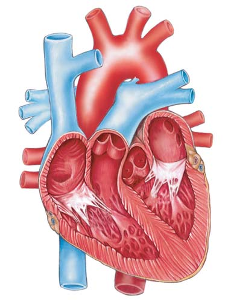